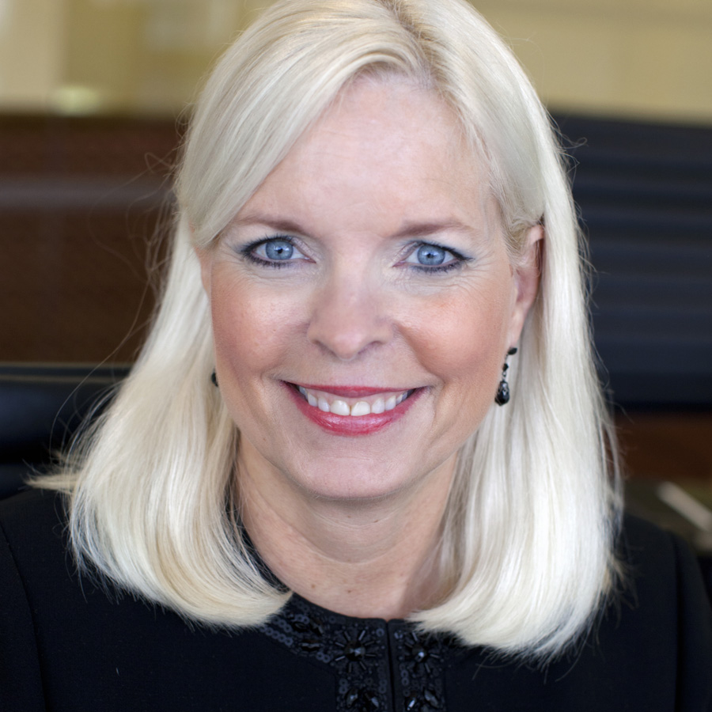
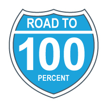
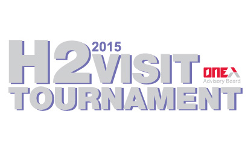
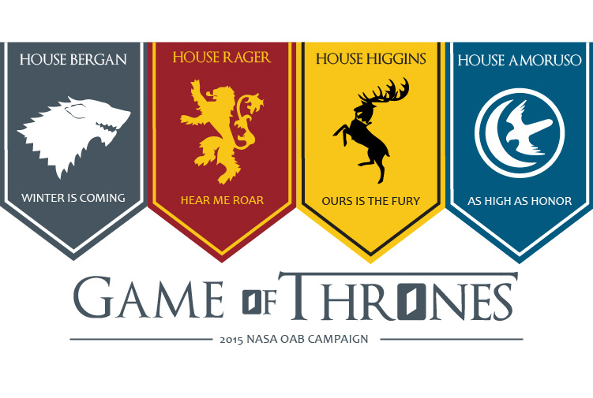
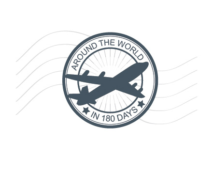
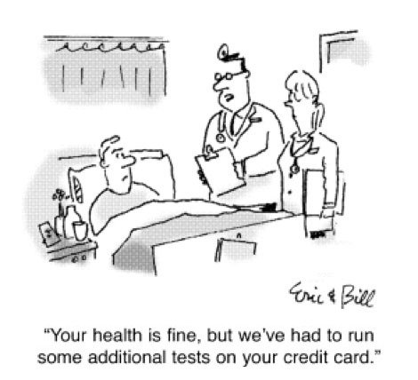
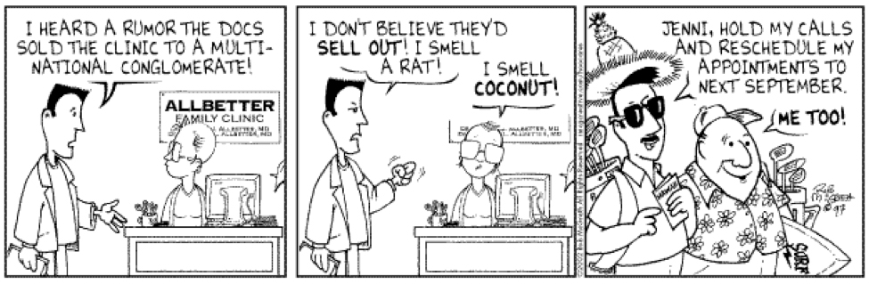

Home
/
About
/
Resources
/
Campaigns
/
The Daily Lead
Celebrate Summer with OABeach Week!
We're bringing the OABeach to you
OAB wants to spread the sunshine this summer, and we need your help!
Anyone who passes a lead during the week of August 8th - August 12th will get a limited edition OAB swag item!
Trust us, you definitely want to claim one of these prizes before we give them all away. All you have to do is pass at least one lead next week! (Just one!)
OABeach Week isn't the only cool thing going on this summer...
Learn more about all of OAB's H2 initiatives that could earn you money and prizes!
Sarah Hopkins - August 2, 2016
Help Your Members Unlock $7 Million of Care Variation Opportunity From Their EHR
The beat on the street is Stanson
On August 4th at 1pm ET, Mike Murray will discuss how some organizations are taking a dive into over $700 billion left on the table in care variation opportunity.
As the industry makes headway on digitizing clinical records, attention is now turning to unlocking the data inside the electronic health record (EHR) to advance strategic goals such as cost reduction, quality improvement, and risk-based payment preparedness. Some hospitals and health systems are taking the lead in leveraging this data by hardwiring clinical guidance into the EHR through patient-specific clinical decision support.
Click here for the link to send to your members, or to register yourself to learn more.
Want help scripting a message to your member to invite them to attend? You can find that here.
Jane Roberts - July 29, 2016
The Room Where It Happens...The Collections Office
PICPro takes the Broadway stage

If any of you are like me, you’ve spent the last several months being completely entranced by the Broadway juggernaut, phenomenon known as Hamilton. With the soundtrack on constant repeat on my Spotify, I pretty much oscillate between which song is my favorite on any given week. This week’s obsession—“The Room Where It Happens,” the show-stopping number that finds Aaron Burr (originated by the talented Leslie Odom Jr.) lamenting his exclusion from a small, private dinner between three of our Founding Fathers that ultimately leads to the creation of our American financial system.
Often times, we take for granted the large impact that small opportunities can have on a systematic level. For instance, take professional billing collections and reimbursement challenges facing medical groups across the country. Traditional approaches to collecting small-dollar discrepancies from professional billing are costly, and often result in millions of dollars of lost revenue for medical groups due to unclaimed small-dollar underpayments and denials.
So how do we help members enter The Room Where (the small collections) Happen?
-
PICPro is helping our members reclaim these lost dollars and improve professional revenue. Our technology platform helps members maximize their contract yield by:
- Accurately calculating expected payment
- Automatically surfacing and appealing denials and underpayments
- Modeling proposed and existing contracts to evaluate profitability

In other words, our technology is helping medical groups root out and appeal small-dollar underpayments and denials that, collectively, can amount to millions of dollars in recovered revenue. Talk about “Not throwing away my shot!”
The next time you talk to your medical group members, ask them about how well they are equipped to tackle small dollar variances in their overall revenue recovery strategy. After all, we wouldn’t want our members feeling like Aaron Burr—missing out on small opportunities that can ultimately lead to huge financial gains.
Ulili Emore - July 28, 2016
What's New in Student Success?
TWO Webconferences happening in the world of Student Success, next week!
When is it?
Wednesday, July 27th 11:00AM-12:00PM ETWho should attend?
Provosts and Vice Provosts / Senior level executives leading student success and retention effortsWhat will we be taking about?
Here are the facts, at one university, 54% of students admitted to not always reading the university emails. To reduce preventable attrition, institutions need a streamlined communication strategy. EAB experts have cracked the code on how to motivate students to take ownership of their own success. Guide—EAB’s new mobile student success platform—provides students with the messages and resources they need to succeed.What can attendees expect to learn?
During this webconference, EAB experts will show how Guide helps students take action to reach crucial student progress milestones through:- Commonsense approaches to processes like financial aid and major selection
- In-app messaging that cultivates and reinforces positive habits
- Automated reminders that alert students of problems immediately
- Direct connections to campus resources and help when needed
Click here to download the .pdf invite to send to your members!
_________________________________________________________________________________________
When is it?
Thursday, July 28th 1:00-2:00PM ETWho should attend?
Provosts and Vice Provosts / Senior level executives leading student success effortsWhat will we be taking about?
As most folks in the higher education know, many schools have found themselves struggling to maintain retention and graduation rates due to the stagnating first-year enrollment rates compounded by demographic shifts.What can attendees expect to learn?
During this webconference, Experts from EAB’s Student Success Collaborative (SSC) will share:- Embedded accountability tools for visibility into intervention effectiveness
- Research-driven practices and customized change
- Risk analytics based on real-time and historical data for risk stratification and tailored intervention
- Communication tools and comprehensive case management for scalable, closed-loop student care
Click here to download the .pdf invite to send to your members!
Kayla Masterman - July 21, 2016
WEBCONFERENCE ALERT: Crimson Continuum of Care
How clinical standardization can transform your organization
Here's the scoop:
When is it?
Wednesday, July 27th | 3 p.m. – 4 p.m. ETWho should attend?
CEOs/ CFOs/ CMOs/ Quality ExecutivesWhat will attendees learn?
How to move toward a culture that supports and executes a clinical standardization strategy
Read the official overview/blurb below, and Click here to register your member.
How Clinical Standardization Can Transform Your Organization:
Create a culture that supports and executes a winning strategy
Webconference | Wednesday, July 27th | 3 p.m. – 4 p.m. ET
Despite universal dedication to providing quality care, virtually every hospital organization has room to improve the consistency with which it delivers safe, evidence-based care.
Beyond individual clinical initiatives, many executives are looking for a path to fundamentally reshape their organization’s DNA, building a culture in which all providers willingly invest time into improvement initiatives and abide by the resulting standards.
During this webconference, our experts will discuss how to move toward a culture that supports and executes a clinical standardization strategy by sharing case studies that illustrate how the principles of clinical transformation apply across both large systems and individual hospitals.
Jocelyn Cassada - July 18, 2016
Lead Passers of the Month – June 2016
Outstanding leads at every level
This section of our blog will highlight current and future Medallion Status lead passers at each level (Bronze, Silver, Gold, and Platinum); honoring the creative, unique, funny, and impressive leads they have passed through to the One Advisory Board team this month. Check them out, and hopefully find a few best practices along the way!
BRONZE: Audrey Wilson – Analyst, EAB Strategic Research

This Lead Was Just Plane Awesome
On a flight back to DC Audrey met Cathleen Anderson—the Assistant Vice President of Enrollment Management at Niagara University. During the flight, the two got to talking and Cathleen mentioned that she’d previously met with EAB regarding our Enrollment Management Forum. At the end of the flight Cathleen asked that Audrey reach back out to her colleagues and reference the conversation they had. Audrey was then able to provide a GREAT introduction to the current EMF Marketer. Way to go Audrey!
PLATINUM: Dan Pierce – Marketing Associate, EAB

H2 Visit Tournament
This month the OAB Team would like to call out Dan for qualifying for the H2 Visit Tournament! For those of you who don’t know, the H2 Visit Tournament is an annual contest pitting 64 OAB Lead Passers against each other in an effort to win the vacation of a lifetime. Each year, the participants are selected based on the number of visits their leads help to schedule in H1. To qualify this year, each lead passer had to have at least 9 visits associated with their leads in H1. Not only was Dan the ONLY Marketing Associate to qualify, but he managed to schedule 14 visits. Keep up the great work Dan!
PLATINUM: Bray Hill – Manager, Research and Insights Account Management

There’s A New R&I AM Lead Passer in Town
The OAB Team would like to recognize Bray for stepping up her lead passing game this half and becoming a top R&I Account Management lead passer. Since January 1st Bray’s passed more than 80 leads, which have resulted in 3 NBB units in this past month alone! If you want to know her lead passing secrets…you’ll have to ask her yourself, but we have a feeling it has something to do with all of the great introductions she’s been sending out. Watch out James Millard—it looks like you’ve got some competition!
HONRABLE MENTION: The Entire Team at St. Anthony’s Medical Center
Comprehensive Revenue Cycle Transformation
This month the OAB Team would also like to call attention to Carson Gannon, Alex Guambana, and the team of 20 plus ABC employees who contributed to the $1.55 Million in NBB that came in for St. Anthony’s Medical Center in June. This Team worked tirelessly with St. Anthony’s to modernize their revenue cycle and to prevent more than $10 Million in annual revenue leakage. With year 1 NBB of $1.55 Million, the total solution includes RCS Consulting, PIC, PayNav, and the Financial Leadership Council. To quote Kim Beahn, “Team – this is something very special to celebrate, honestly….The thoughtful solutions-oriented approach to solving the member’s challenge was exactly right answer. And it’s realizing the vision of how we are trying to evolve as a firm - bringing consulting (with retainer tail!) and our powerful technology platform together. Congrats to the whole team on this amazing accomplishment and for setting a gold standard for other verticals to replicate! Well done”. Needless to say, you all absolutely WOWED not only Kim, but the entire OAB Team.
Liz Bruno - June 11, 2016
Weekend Bets - July 2016
How are you spending your weekends this month?
This section of our blog will give you a few ideas of where to be and what to be doing this weekend and across the month. We will feature suggestions for each of the following office locations: DC, Nashville, Austin, and San Francisco. Check out our picks below and let us know what you think.
Do you have the 411 on a great upcoming event in your city? Drop me a line and give me the scoop!
Washington, DC
ICE
Last summer, the National Building Museum transformed part of its Great Hall into a massive ball pit. In case you missed all of your friend selfies, “The Beach” was a huge hit. But, this summer the Museum is getting even cooler (pun intended). Across July 2nd-September 5th, the Great Hall will be filled with giant icebergs as large as 56 feet tall. Although we’re sad to report that they’re not made of real ice, these icebergs were designed by the firm behind New York’s High Line, and we’re sure that they will not disappoint!

Nashville, Tennessee
Music City
Created in 2006, Music City Walk of Fame honors music legends that have made a significant contribution to the world through song. This May, Nashville’s star studded walkway added a few new shining stars to its collection--the Grammy award winning band, Alabama, and the legendary, Sam Moore. After strolling down this one mile stretch of stars, we’re confident you’ll know why Nashville has been so fondly nicknamed “Music City”.

San Francisco, California
Seas the Day
If you’re looking for something to fill you Saturday or Sunday afternoon, we’ve got just the thing. The Privateer, a 41 foot sail boat that belongs to the San Francisco Sailing Company offers Sailing Tours and private charters throughout the year. The 90 Minute Sail includes beer and wine and seats up to 28 people. Leaving from Pier 39, the tour provides breathtaking views of Alcatraz, Angel Island, and the Golden Gate Bridge. Sounds like the perfect way to seas a beautiful summer day to us.

Austin, Texas
I'm Outdoorsy…in That I Like Drinking on Patios
In Austin there is no shortage of beautiful outdoor spaces to eat or drink at. In fact, finding great restaurants or bars in Austin is easy; the hard part is…deciding which one to go to! But, have no fear, OAB’s done a little research for you all, and we’ve provided a few suggestions below.
Perla’s Seafood and Oyster Bar
In this nautical themed restaurant you’ll find a spacious deck that overlooks South Congress Avenue. Based on the reviews we’ve read, the people watching is ALMOST as good as the lobster rolls.
Alta’s
This farm-to-table café offers a beer list of local favorites, a locally sourced food menu, Blue Bottle Coffee, and it provides a spectacular view of Lady Bird Lake.
Whisler’s
This rustic bar boasts a huge outdoor patio, live music, a great wine selection, and some of the best cocktails in town.

Liz Bruno - April 28, 2016
What's Going on in H2?
It just might be your better half...
It just so happens that many things look way cooler in halves... and H2 is no exception! Starting July 1st, OAB is giving you plenty of reasons to approach H2 2016 with a glass-half-full attitude. You just might find your "better half" in H2! (And earn some great perks along the way.)
#OABDoubleDollars
This is HUGE news for your wallet... OAB is doubling all visit incentives in H2 2016!
*OAB visits that occur July 1, 2016 - December 31, 2016 are eligible
$200 for every...
Research OAB visit, TD OAB visit, PT or C&M OAB visit (no C-level attendee)
$500 for every...
PT or C&M OAB visit (C-level attendee)
To learn more about traditional OAB incentives, click here.
Summer Swag: OAB vault pulls x 2
Need some extra summer sunshine? In the form of awesome prizes?
Each month, OAB awards the individual who has passed the most OAB leads in that month with the opportunity to pull a prize from the OAB vault! In July and August, we will give not one, but two top lead passers in the firm a chance to pull from the vault.
What's in the vault, you ask?
Gift cards, fancy dinners, iPads, FitBits, Apple TVs, Apple iWatches... and much more.
How do you win?
Pass as many OAB leads this summer as you possibly can!!!
2016 H2 Visit Tournament
If you're not familiar with OAB's annual H2 Visit Tournament, it's time to get acquainted! This year, we've made some revisions to the rules of our most popular NCAA-style bracket competition... you're gonna love 'em!
Anyone can play!
This year, we invited anyone in the firm to qualify for a spot in the H2 Visit Tournament bracket. In order to qualify, you must be one of 2016's top 64 OAB visit generators in the firm. Next week, we'll reveal who's in the bracket, as well as the first round of one-on-one match-ups for the month of July.
What can you win?
This is where it gets #baller... As in previous years, the last competitor standing at the end of the 6 month tournament wins an unbelievable international trip for two (last year we sent James Millard to Fiji!)
Historically, the first runner up receives an awesome vacation for two in a U.S. destination. This year however, we are giving away an additional second place domestic trip prize to the eliminated competitor with the highest cumulative OAB visit number in H2. This means that even those who are eliminated in early rounds of the bracket have just as high a chance as anyone else to win an amazing vacation!
Sarah Hopkins - June 30, 2016
Volunteering With OAB!
Fun opportunities to serve your community this summer
It’s no secret that the Advisory Board is invested in Community Impact. This past year alone, ABC employees completed more than 75,500 hours of service (this is NOT a typo…I repeat…this is NOT a typo). I don’t know about you all, but the OAB Team thought that that was a pretty inspiring number. So, over the past 6 months, we’ve invested some time into figuring out more ways to do our part. Take a look below to see what organizations we’ve been partnering with!
DC Central Kitchen is a community kitchen located in North West DC, and let me tell you, it’s an amazing place. Not only has Obama (and more importantly, OAB) volunteered there, but each day, volunteers and DC Central Kitchen staff help to produce 5,000 meals using 3,000 pounds of food. These meals are then distributed to nearby homeless shelters, transitional homes, schools, and nonprofit organizations. But…that’s not all! DC Central Kitchen also has a program that trains unemployed adults for culinary careers. Impressive, we know.

DC Central Kitchen’s most popular volunteer opportunity is their meal preparation shift, a three hour shift consisting of basic food preparation (Ex. chopping, peeling, or washing food—perfect for you Top Chef wannabes). But, these shifts fill up fast! So sign up early on their online volunteer portal!
BONUS: you may get to see your boss wear a "beard net" - yes, that’s a thing. (Photo proof on the left.)
In the summer, DC Central Kitchen also offers offsite Gleaning opportunities. Don’t worry, I didn’t just miss-spell “cleaning”, Gleaning is a real thing, and a very awesome volunteer opportunity.
During a Gleaning shift, volunteers visit local farms and collect leftover crops that the farmers aren’t able to sell. This produce is then used during DC Central Kitchen’s meal prep shifts.

With more than 446 acres of open fields, trails, and gardens, the National Arboretum is the perfect place to volunteer if you want to escape the city for an afternoon. If you don’t believe me, just take a look at the picture of our last volunteer shift below. You’re feeling calmer just looking at it, aren’t you?
The Arboretum has more than 100 volunteers that they work with on a reoccurring basis each year, but they also welcome groups for one time and reoccurring opportunities! Volunteer groups assist with invasive species removal, weeding, mulching, and litter pick up. Workdays are scheduled for a minimum of 3 hours and a maximum of 6 hours (but, we’ll admit…the three hour shift was pretty tiring).

EveryBody Wins! DC
Once a week during the School Year, a couple of our OAB team members (and even more from our larger Strat Marketing family) pick up some of their favorite childhood books and read with students through a program called Everybody Wins! DC.
Everybody Wins! is a non-profit organization devoted to promoting children’s literacy. The U.S Senate helped to launch this lunchtime reading program back in 1995, and the program now operates in 37 low-income public elementary schools across DC.
Once, while volunteering with my mentee she told me, “I love reading! You get to travel places without having to go anywhere!”. If that doesn’t make you want to start volunteering, I don’t know what will!

Liz Bruno - June 23, 2016
Lead Passers of the Month – May 2016
Outstanding leads at every level
This section of our blog will highlight current and future Medallion Status lead passers at each level (Bronze, Silver, Gold, and Platinum); honoring the creative, unique, funny, and impressive leads they have passed through to the One Advisory Board team this month. Check them out, and hopefully find a few best practices along the way!
Dan Schreiber – Managing Director, Research and Insights Account Management

Hey Now, You’re an All Star
Dan Schreiber, a former H2 Visit Tournament winner, has historically been an All Star when it comes to lead passing. However, this month, Dan deserves a little extra recognition for his lead passing skills. Here’s why: recently, Dan stepped out of his typical role to help fill in for an Executive Advisor that left the firm. Despite having to juggle additional responsibilities, Dan has successfully taken on this extra job AND he’s managed to pass a ton of great OAB leads in the process. Needless to say, we’re impressed. Keep up the great work, Dan!
Sam Harris – Research Associate, EAB

Hungry for Leads
Back in May, Sam Harris attended a dinner party with Michael Sperling, a family friend, and former EAB member. As it turns out, Michael had worked with EAB while he was the VP of Academic Affairs at Mercy College in Dobbs Ferry and he had REALLY enjoyed EAB’s work (Great work, EAB!!). Now, Michael serves as the VP of Academic Affairs at the Culinary Institute of America. While a Culinary Institute is not our typical EAB member, OAB was still able to loop in the Community College Forum Marketer (who was already having conversations with a Culinary Institute in California!). Now, Michael has the potential to join a membership that would not only provide him access to AAF again, but to BAF, COE, and all of our memberships in the four year space. It might sound cheesy…but we thought this lead was grate!
Strategic Leaders at Royall & Co.
Strategic Leads from our Strategic Leaders
Across May, the Strategic Leaders at Royall & Co. found a way to utilize their relationships, and leverage Royall leadership to help Ben Roberts (an SSC Marketer) get in the door at a number of client institutions. As a group, they’ve figured out a way to not only help business growth at the firm, but to support the collaboration of Royall and EAB. Well done!
Soltan Bryce – Business Analyst, Revenue Cycle Delivery
Re-Joyce-ing Over this Lead
Another lead passer deserving recognition this month is Soltan Bryce, a Business Analyst assigned to Payment Integrity Compass. In May, Soltan identified an awesome lead while speaking with Joyce Noel, the Director of Revenue Cycle at Excela Health. During an onsite, Soltan and Joyce began chatting about patient payments and estimations. Knowing that Payment Navigation Compass could address those areas, Soltan mentioned our resources and was able to articulate how they could add value to the work Joyce was already doing with Payment Integrity Compass. Ultimately, Soltan was able to provide an introduction and to generate strong interest in an initial PayNav conversation. Great lead, Soltan!
Liz Bruno - June 8, 2016
WEBCONFERENCE ALERT: Planning 20/20
Teleheath Industry Trends 2016
Here's the scoop:
When is it?
Tuesday, June 28th | 1 p.m. – 2 p.m. ETWho should attend?
VPs/CXOs/Directors of Strategy, Planning, and Business DevelopmentWhat will attendees learn?
By attending, you would learn: example use cases for telehealth, ways to drive adoption of telehealth, and the value proposition behind telehealth investments.
Read the official overview/blurb below, and Click here to download the .pdf invite to send to your member.
Telehealth Industry Trends 2016: What’s new in 2016
Webconference | Tuesday, June 28th | 1 p.m. – 2 p.m. ET
Telehealth has the potential to deliver faster, better, less expensive, and more convenient care–so why is the "health care of the future" taking so long to catch on?
Join us to learn about the current state of the telehealth market, the forces that can influence adoption, and how to evaluate whether or not your hospital should invest.
By attending, you'll learn:
- Clinical applications and use cases for telehealth
- Six market forces that drive adoption
- How to understand the value proposition for telehealth investments
Ellie Barlow - June 6, 2016
Technology Strategy and Implementation: How to Grow Member Value
Clinovations training course with Dan Clark

From helping members select the right Electronic Health Record (EHR) vendor all the way to go-live on their new IT system, join Dan for an overview of the work done by the Clinovations’ Implementation service line. Learn key tactics to initiate conversation with members about their implementation needs and walk away understanding how Clinovations provides a level of service and expertise that sets us apart from competitors.
This course can count towards your MBA certification, please contact Jane Roberts for more information on learning how to become certified.
- June 8, 1:00 pm-2:00 pm ET
- D.C. (Multipurpose 634) and Virtual
- Understand the process of selecting, planning, and going live on an EHR and other systems
- Assess member need for support through their EHR and other system implementation
- Identify internal resources and offerings within the Advisory Board that specialize in EHR and other system implementations
- Celina Kurani for questions about the training session
- Jane Roberts for questions about the MBA program
Rese Chorpening - June 3, 2016
Weekend Bets - June 2016
How are you spending your weekends this month?
This section of our blog will give you a few ideas of where to be and what to be doing this weekend and across the month. We will feature suggestions for each of the following office locations: DC, Nashville, Austin, and San Francisco. Check out our picks below and let us know what you think.
Do you have the 411 on a great upcoming event in your city? Drop me a line and give me the scoop!
Washington, DC
Jazz up Your Weekend
It’s time to grab your picnic blankets, friends, and that pitcher of sangria, because as of May 27th, Jazz in the Garden is officially back! For those of you who don’t know, Jazz in the Garden takes place in the Sculpture Garden next to the National Gallery of Art every Friday between 5:30PM-8:30PM (from now until September 2nd). At the concert, local artists perform, showcasing a broad variety of musical styles, including: salsa, blues fusion, and Afrofunk. For a full list of upcoming musicians click here!

Nashville, Tennessee
Honky Tonk Highway
It’s possible that I’m the only one who didn’t know this, but as it turns out, Honky Tonk is NOT a made up word used in country songs. In fact, Honky Tonks are very real, very fun, and veryyy free (just in case any of you loyal Daily Lead readers are like me, a Honky Tonk is: “an establishment that contains at least one rockin’ stage, cold beverages, and a party that lasts all day, every day”). Sounds pretty great, right?? Well, as it turns out, Nashville has an entire street dedicated to Honky Tonks. Honky Tonk Highway, as it’s called, is lined with bars and clubs, and they’re known to bump music from 10:00AM-3:00AM. I’ve only just learned what they are… but I already love them.

Austin, Texas
Just Keep Swimming
Meteorologists are already predicting that this summer is going to be hot, hot, hot. But, thankfully for folks in the Austin area, there are a number of watering holes to cool down in. To get you started, OAB’s found a handful that you can try: Jacob’s Well (pictured), Krause Springs, Barton Springs Pool, Blue Hole, Frio River, Barton Creek Greenbelt, and Hamilton Pool Preserve.

San Francisco, California
Time to Wine Down
Attention West Coast employees: OAB has found the perfect way for you to wine down this summer. This year, the 2016 Bay Area A-List awards voted Stage Left Cellars as the best San Francisco Winery, a contest which is based on more than 19,000 votes. AKA, we’re not the only ones who think visiting this winery is a good idea. Located in Oakland, this vineyard hand sorts individual berries so that only the best fruits make it into the fermentation process and then they stomp the grapes with their feet (we’re happy to report that they use food grade rubber boots when stomping!). As you’ve probably guessed, this wine doesn’t come cheap, but pass a few OAB leads and you’ll be covered! ;)

Liz Bruno - June 2, 2016
The Advisory Board in Numbers
Alarming industry trends + Pharmacy Executive Forum = happy health systems

Roughly how many members use our best practices, groundbreaking technology, and world-class consulting to improve their organization.
The number of health care leaders we serve globally.
The number of custom questions from health care leaders answered each year.
The Advisory Board is an organization driven by numbers. The number of organizations we serve, the amount of health care professionals we assist, and number of lives we save.
As the health care market becomes even more volatile, there are a new set of numbers that are capturing our attention.
Antibiotic overuse cost the health care system as much as $20 billion and is estimated to kill some 23,000 patients a year. CMS has projected a 6.3% yearly increase in drug spending through 2024. Dollars spent on medication increased by 13.1% in 2014.
For the past two years, pharmaceutical prices have been particularly shocking. These numbers are causing many health care organizations to look at their pharmacy business as much more than just a cost center, but a key component in their organization’s strategic goals. Value-based payment, population health, patient consumerism—these are just a few of the industry trends prompting health systems to fundamentally rethink pharmacy services.
As the firm continues to lead the pack in health care, The Advisory Board’s new Pharmacy Executive Forum leads the market in providing pharmacy executives with unique resources to turn alarming pharmaceutical trends into opportunities for new streams of revenue, improved patient care, and minimized drug costs.
We’re helping pharmacy executives...
- Develop market-leading pharmacy strategy
- Enhance team capacity and effectiveness
- Communicate pharmacy’s value to the system
- Accelerate performance improvement
Learn more about how you can support your members’ CXOs and pharmacy executives in tackling these issues or please direct any information or leads to the OAB team!
Alexis Murray - May 25, 2016
Medals, Moola, and More
OAB has some exciting updates to Medallion Status!
The 2016 Summer Olympic Games will begin in less than three months. However, you don’t have to go as far as Rio for a chance to win Bronze, Silver, or Gold. In fact, right here at The Advisory Board Company, you even have the chance to go Platinum. While OAB can’t promise you international athletic fame and glory, we can say with confidence that we have lots of cash, swag, and bragging rights to go around.
Let the Games Begin
If you’ll remember back to about a month ago, we put some ambitious goals in front of the company. We finished out 2015 with 758 lead passers with a Medallion Status of Bronze or higher, which resulted in over 4500 marketing visits.
This year, we challenge the firm to raise the number of Medallion Status lead passers to 1000 – 700 Bronze, 125 Silver, 75 Gold, and 100 Platinum. It may sound aspirational, but just like the superstar athletes gearing up to compete in this summer’s games, we have the utmost faith in you! And still, if our unwavering support doesn’t convince you, let’s take a look at how we’re pacing already. So far this year we have…
- 420 OAB lead passers at Bronze (60% of goal)
- 68 OAB lead passers at Silver (54% of goal)
- 22 OAB lead passers at Gold (29% of goal)
- 29 OAB lead passers at Platinum (29% of goal)
That puts us (yes, that includes the OAB team – we are visit generators too!) at 539 employees with a Medallion Status of Bronze or higher, 461 away from our goal of 1000. With over a month left in the half, we are well on our way.
Early Front-Runners
First, we’d like to give a special shout out to the top 6 visit generators at the firm so far this year:
- Michal Abraham: 64.33 visits
- Harrison Fanaroff: 45.83 visits
- James Millard: 40.5 visits
- Owen Crean: 37.5 visits
- Sarah Comer: 37 visits
- Brett Schenkel: 32.5 visits
Second, we’d like to recognize those individuals who have already reached Platinum level Medallion Status. As you can see above, we are the furthest away from our Platinum Goal, so a special thanks to these folks that have helped us make some progress:
Gregory Papillon, Olivia Millard, Jay Fovel, Luis Ferreira, Devin Airey, Eleanor Hofstedt, Kyla Normand, Matthew Feger, Stephanie Schmidt, Laura Swenson, Sarah Zello, Justine Chan, Kristen Harvey, Brittney Sceals, Lindsay Brewster, Lex Ruby Howe, A.J. Nagaraj, Kathryn Bailey, Caitlin Ursini, Erik Candy, Aaron Knowlton, Brad Haas, Doug Montesano, Brett Schenkel, Sarah Comer, Owen Crean, James Millard, Harrison Fanaroff, Michal Abraham
You Mentioned Some Perks?
We sure did. This year, in addition to our usual incentives for outstanding OAB visit generation – H2 Visit Tournament (*now open to the whole firm!), Annual Platinum Reception, and OAB swag – we’d like to announce a couple new ones:
Platinum Plus: This year, OAB lead passers whose leads result in 30 or more OAB visits will be given this prestigious title. As a thank you, we will be setting up a lunch series in which Platinum Plus Medallion Status holders will have lunch with members of the Executive Team. We’ve already had several folks hit this milestone so stay tuned for your exclusive invite!
Health Care Delivery and Research Platinum Challenge: Historically, no one from either of these groups has reached Platinum level Medallion Status. This year, the first person from each to hit 15 visits will win some cash-money from OAB!
(Last but not least) Bragging Rights: There are currently about 2200 marketing visits scheduled off of OAB leads and the top tier of visit generators alone are projected to increase firm NBB by $7M. I know we couldn’t promise everyone a spot in the international athletic hall of fame, but those stats are pretty powerful.
Natalie Perkins - May 19, 2016
EAB Plus Royall & Company: The View One Year In
Insights from Chris Marett
Across the last year, EAB and Royall have been integrating staff, processes, and best-practices. There are clear synergies between EAB’s research and technology and the services that Royall provides. Last month, Royall president Chris Marett, wrote about the partnership and how the two organizations can continue to benefit from one another and make an even bigger impact across the industry. Read below to hear what he had to say!
_________________________________________________________________________________________
Posted by Chris Marett on Apr 19, 2016
In my role as president of Royall & Company, I’ve fielded a lot of questions from Royall clients, education leaders and our own employees about the combination of EAB and Royall and what it really means.
To be fair, I’ve worked in business long enough to understand that many mergers don’t really create value for customers and that the higher education field is rife with mergers “in name alone,” where customers see virtually no benefit and cultures oftentimes clash. For that reason, I’m more than okay with the sometimes candid and challenging queries.
But when it comes down to it, everyone is wondering, Why would a best-practice firm want to combine with an enrollment management company?
An opportunity to make an even bigger impact
Now that we have more than a year of experience under our collective belts, I can give a clear answer that is borne out by the facts: The reason that EAB joined forces with Royall & Company is that as a combined entity, we are able to have an even bigger impact on the world of higher education and more effectively address the most pressing challenges facing our college and university partners.
First of all, while we have a lot in common, our competencies and approaches are complementary to each other.
EAB is, at its heart, devoted to research-based approaches to discover and implement best practices. Every year EAB teams take difficult, complex issues that members are wrestling with and identify the most effective solutions and strategies. Even if EAB uses quantitative data in the course of our work, the firm sees its job as helping members find the right answers to their problems, and that requires synthesizing hundreds of case studies, interviews and other sources of information.
On the other hand, one way to look at Royall & Company is that it's a huge real-world laboratory. Each year, Royall works with hundreds of schools on recruitment and advancement campaigns, and it applies a deeply rooted belief in the importance of testing and innovation to its work. In fact, the Royall data science team runs more than 300 experiments – every year – to determine which tactics are most effective and in which circumstances they are most successful.
So you can see the commonality: Across EAB and Royall, we all have a deep commitment to the idea of "best practice" and improving performance, with the only variability occurring on how we apply that commitment.
Let me give you just one example of how these capabilities come together: Our tremendously talented EAB infographics team recently produced an infographic summarizing the findings from recent Royall & Company enrollment marketing experiments.
Click on the image to receive a high-resolution PDF of the infographic.
More synergy, more insight
It's not hard to see how we can work together in other ways as well. Ideas from EAB's research can be tested, validated and refined in Royall's real-world marketing experiments. Likewise, things we discover by mining the billions of interactions that Royall has with students and alumni can feed into EAB's insights.
That means that with these synergies, EAB members get even better strategic guidance and even more effective platforms; Royall clients get even more impactful outreach and ultimately an even stronger return on their investment.
But it's not just about complementary approaches. EAB and Royall together possess data sources that cover the entire student lifecycle, from before the time when college is even a glimmer in students’ minds, all the way through to their college reunions.
Our data scientists have been able to find out, for example, that students who are actively recruited to their college through multichannel marketing campaigns actually give at higher rates as alumni, compared to so-called "stealth applicants" who didn't receive pre-enrollment marketing.
In another study [New Clues about What Drives First-Year Persistence], we worked with three schools who are part of EAB's Student Success Collaborative and also are Royall & Company clients for enrollment marketing. In that initial cohort, we found that the later a student applies, the less likely he or she is to make it through the first year.
These are just two examples of insights that we’re already deriving from our combined data assets, but we are just getting started. I’m genuinely excited about how, over the next several years, the combination of EAB and Royall will work to solve the most pressing challenges facing our college and university partners and help make higher education smarter and more effective.
Subscribe to the Royall blogAdam Rosenberg - May 16, 2016
H2 Visit Tournament Bracketology With OAB
Predicting 2016 outcomes
It's almost that time of year again... H1 is nearing it's end, and top contenders are turning up the heat to prepare for the 2016 H2 Visit Tournament. This year, with the entire firm eligible for a slot in the bracket, we decided to take a look at our bracket qualifiers as of now and make a few logical predictions...
Remember, at the end of H1, the top 64 OAB visit generators in the firm will be entered into a NCAA Tournament style bracket. Each month, qualifiers compete in a one-on-one duel against another contender to generate the most visits. The winner moves forward and on to the next round to compete for the grand prize.
Awesome alert: we sent 2015 winner James Millard to Fiji... all expenses paid.) Who will be the winner in 2016? And where will we send them on vacation? Only time will tell, but let's take a look at how the bracket would look today.
Here's how we made our predictions:
- We took the top 64 OAB visit generators in the firm as of this week, and matched them up against each other in the first round of the bracket.
- We calculated each player's individual 2016 OAB lead-to-visit conversion rate to use as a hypothetical indicator of their performance potential in the tournament.
- We let the bracket "play" itself out - in each round, we moved the player with the higher conversion rate forward. We're excited to see if our predictions hold up at the end of H2!

Click Bracket to Enlarge.
We could be on the right track with our guesses, or wildly off, but with some veteran MVPs and some rookie hotshots ranking among the top 80 visit generators this month, H2 2016 is sure to bring an exciting Visit Tournament!
Here are the top 80 OAB visit generators in the firm who have a strong chance of making it onto the bracket:
Michal Abraham, Harrison Fanaroff, James Millard, Sarah Comer, Owen Crean, Brett Schenkel, Doug Montesano, Brad Haas, Aaron Knowlton, Erik Candy, Caitlin Ursini, Kathryn Bailey, A.J. Nagaraj, Lex Ruby Howe, Stephanie Schmidt, Matthew Feger, Kristen Harvey, Brittney Sceals, Sarah Zello, Lindsay Brewster, Laura Swenson, Eleanor Hofstedt, Samantha Mocknick, Luis Ferreira, Kyla Normand, Justine Chan, Jay Fovel, Devin Airey, Rick Tillar, Jessica Dasher, Grace Colloton, Olivia Millard, Margaret Shanley, Laura Herman, Gregory Papillon, Chloe Bellomy, Margaret Rives, Christopher Chiang, Bray Hill, Timothy Martin, Mary Allen DeBold, Mairzy Krulic, Leigh Dance, Dustin Ott, Rebecca Howard, Meredith Fennessy, Jill Maydak, Susan Woda, Spencer Graves, Melinda Salaman, Iain Atkinson, Douglas Hoffman, Zac Ankrom, Stephanie Gutendorf, Sarah Larsen, Kimberly Vinci, Katherine Coats-Thomas, Hillary Brendzel, Elizabeth K. Bitton, Elizabeth Grimes, Amanda Vincent, Zachary Mitchell, Stephanie Gutendorf, Sean Tivnan, Rebecca Hopkins, Rachael Jacobs, Matt Ruiz, Lindsay Klein, Lauren Shalleck, Juliette Peyraud, Jenna Hock, Jared Landis, Emily Sentz, Conor McFadden, Caroline Painter, Benjamin Roberts, Ashley Rice, Ann Silberstein, Allison Perez
Secure your spot in the bracket before it's too late!
Sarah Hopkins - May 13, 2016
Lead Passers of the Month – April 2016
Outstanding leads at every level
This section of our blog will highlight Medallion Status lead passers at each level (Bronze, Silver, Gold, and Platinum); honoring the creative, unique, funny, and impressive leads they have passed through to the One Advisory Board team this month. Check them out, and hopefully find a few best practices along the way!
SILVER: Tess Niehaus – Managing Director, Performance Technologies Marketing
Networking at it's Finest
This month, OAB wants to recognize Tess for utilizing her connections to help create a great OAB lead for one of ABC’s recent launches – Physician Spotlight. For this lead, Tess reached out to the Senior Vice President of Marketing & Communications at OSF HealthCare System (Susan Milford) who previously worked with Tess at BJC Healthcare. Through her conversations with Susan, Tess was able to provide an introduction, secure a visit, and bring all Strategic Marketing Directors at OSF into a meeting. Amazing work, Tess!
SILVER: Liz Davenport Hughes – Managing Principal, Strategic Accounts

How Do You like Them Leads?
In case you’re wondering, the answer is: A LOT. This past month, Liz passed 38 leads, five of which have already converted to visits (talk about quantity and quality!). Great work, Liz! Keep them coming!
HONORABLE MENTION: Theresa Meyers – Director, Performance Technologies Marketing

We Found Leads in a Hopeless Place
Theresa Meyers is not in a member facing role, but being the Marketing savvy individual that she is, she didn’t let that stop her from uncovering an OAB lead. Theresa was interviewing a candidate for a Coordinator role when the candidate mentioned that she had family that worked at Massachusetts General. Once the interviewee began discussing that Massachusetts General was going through Epic Implementation, Theresa realized that this could potentially be a great opportunity for Clinovations. Theresa—great work! We love that we can always count on you to be thinking about leads!
HONORABLE MENTION: Allyn Bissmeyer – Senior Manager, Performance Technologies Account Management

Leads on Leads on Leads
Last month, Allyn identified more than five OAB leads at one institution and then went above and beyond to help coordinate all of the individual pursuits. At the end of April, Allyn spoke with the VP of Business Strategy at Community Health Network, who expressed interest in getting additional information and pricing on several Advisory Board products. Following the call, Allyn sent OAB a very clearly outlined emailed detailing the contact’s interests and the potential leads. Once the Marketers were assigned, Allyn provided a detailed list of next steps and offered to act a central point of contact for all of the Marketers involved. Allyn, OAB was impressed with your dedication to making this multi-product lead such a well-coordinated pursuit!
Liz Bruno - May 12, 2016
Lead Passing Best Practices for Marketing Associates
Q&A with John Rehm and Rachel Weitzman
Senior Marketing Associate, Nursing Executive Center
Senior Marketing Associate, Physician Engagement
Liz Bruno - May 5, 2016
Keeping up With the Talent Development Team
We're so excited - can you tell?
Have you heard? Talent Development is HOT right now and the TD team is on a roll.

From a Marketing perspective, they have shattered their NBB goals quarter over quarter – exceeding their original 2015 annual goal by over $1.25M and tallying $500K just in Q1 of 2016.
And now it’s your turn to get involved! We are hosting an executive level prospect meeting in DC on Thursday, June 9 to showcase some of our new stress management research, educate contacts on our approach to leadership development, and share how we’ve changed over the past year.
How can you help?
Spread the word about the meeting and support the team’s recruitment efforts. If you know a prospect who may be interested, please contact Lauren Scully.
Who?
CHRO, Chief People/Learning Officer, VP of HR/Organizational Development/Talent Development
What?
Download the agenda or register a prospect here.
When/Where>
Thursday, June 9 from 9am-3:30pm ET
Washington, DC
Why?
Our goal is to expose new prospects, as well as contacts who have worked with us in the past, to how we have evolved over the past year. They’ll also get to participate in our newest workshop on stress management, and will have a chance to work on their own leadership development strategy with access to our experts and their peers.

Lauren Scully - May 2, 2016
Weekend Bets - May 2016
How are you spending your weekends this month?
This section of our blog will give you a few ideas of where to be and what to be doing this weekend and across the month. We will feature suggestions for each of the following office locations: DC, Nashville, Austin, and San Francisco. Check out our picks below and let us know what you think.
Do you have the 411 on a great upcoming event in your city? Drop me a line and give me the scoop!
Washington, DC
Grab Your Passport
Passport DC is an annual celebration spanning across the month of May. Hosted by Cultural Tourism DC, this year’s events will include: street festivals, performances, embassy tours, and exhibitions. The first event will take place Saturday, May 7th between 10:00AM-4:00PM, during which 40 embassies will open their doors to the public. Those willing to brave the long lines are guaranteed to experience a day full of food, art, dance, fashion, drinks, and music. In previous years, participants: pet alpacas, played with robots, learned indigenous dances, took karate lessons, painted pictures, watched educational videos, participated in henna demonstrations, learned how to wrap saris, and were gifted Guatemalan worry dolls, maracas, balloons, hats, tote bags, and more!

Nashville, Tennessee
Back to the Past
Time travel just got a little bit easier. Hosted throughout May, this festival will take you back to 16th century England, all without the help of Doc Brown and his time-traveling car! All you have to do is make your way to Arrington, Tennessee, where you’ll find their annual Renaissance Festival sprawled out on 60 rolling acres. The event will feature musicians, magicians, over 60 artisans, a life-size castle, jousting tournaments, camel rides, and theatrical performances. Alright…so maybe it won’t be EXACTLY like traveling back to 16th century England, but you won’t have to make your parents fall in love again, you probably won’t get shot at, and there will be turkey legs the size of your face…so sounds like a win to us!

San Francisco, California
Bay to Breakers
On May 15th San Francisco will host the oldest consecutively run annual footrace in the world, and we promise that you don’t need to be a runner to enjoy this one. Beginning in 1912, this race now attracts more than 70,000 costumed runners and walkers in what can best be described as an “absolutely ridiculous event” and a “quintessential San Francisco experience”. Here’s a little preview of what you can expect. And, finally, since OAB always wants to help you out, here’s our costume tip: if you’re feeling adventurous, get some of your friends to dress up as salmon and then run in the opposite direction as everyone else—it won’t disappoint!

Austin, Texas
Chasing Waterfalls
Don’t go chasing waterfalls, or do…and use some healthy life hours while you’re at it! Throughout the summer, West Cave Outdoor Discovery Center is hosting guided tours of Texas Hill Country’s nature preserve, and you won’t want to miss out! Their expert guided tours take visitors through a limestone crevice, into a sheltered canyon, and finally, to a beautiful waterfall that cascades into a clear blue pool 40 feet below.

Liz Bruno - April 28, 2016
The Only Spring Cleaning You Need to Do This Year
A guide to cleaning up the nursing strategic plan
Spring cleaning has a tendency to be time-consuming and difficult, and thus inevitably ignored. When the time comes to start cleaning the dirt you have been pushing into the corner for a year and fishing through those junk drawers, it can seem impossible to figure out where to start. What rooms should you prioritize? What can wait a few months? How clean is really clean?
What if you had a pre-made plan that allowed you to easily prioritize your needs and goals to ensure that your cleaning is as effective and efficient as possible? Look no further than the Nursing Strategic Scorecard.
It’s not only you who finds spring cleaning cumbersome and frustrating. For nursing teams, the process of creating or updating their strategic plan can be long and complex, and often overlooked.
To overcome this problem, best-in-class nursing organizations are moving away from long documents that are all too often ignored and now creating short strategic scorecards that can be read at a glance.
These streamlined strategic plans benefit nursing teams in many ways—they demonstrate how nursing is advancing critical organizational goals, help focus nursing leaders and frontline staff on those goals without spreading them too thinly, and give nurse leaders at-a-glance information on performance for their most important projects and metrics.
The Nursing Executive Center has created an easy-to-use template for refreshing and building nursing strategic plans. The strategic plan template:
- Can be easily customized. It doesn’t require any data entry or formatting. Just delete what isn’t right for the organization.
- Has easy-to-read formatting. The strategic plan is already formatted and ready to be shared with external audiences.
- Contains direct links to the Nursing Executive Center’s most relevant resources. Project owners can get a jump-start on their projects by tapping into our tools, templates, and best practices.
Wouldn’t it be nice if spring cleaning was this easy?
Jenna Rush - April 25, 2016
C&M’s New Member-Facing Newsletter
Signed, sealed, delivered
Do you think your member could benefit from learning more about the great work we do in Consulting & Management? Want to make sure they get regular updates from consulting?
Then say no more! We’re excited to announce the launch of C&M’s monthly newsletter. The first edition went out yesterday, and we will continue to build the list of members who receive it each month.
Wondering if your members have an appetite for something like this? Here's how you can ensure they don't miss out on awesome content from C&M:
- Test the waters by letting them preview the first version of the newsletter sent on 4/13, and send it along with this scripting. Wait patiently for them to "oooh" and "aaah".
- Once the member tells you they love the content and can't live without it, forward the member's contact information (name and email address) to Michelle Maloney who will sign them up for the monthly C&M newsletter. Please do not connect Michelle directly with the member.
There is so much to look forward to as the newsletter builds momentum, and we can't wait to share it with your members! Spoiler alert: the content we have planned for coming months looks especially valuable... Don't let your members miss out!
Jane Roberts - April 14, 2016
Do You Have the Golden Ticket?
It might by hiding within the remaining HCAB prospect organizations

Four months ago the Health Care Advisory Board launched the Road to 100 Percent campaign. Since its launch we have worked with Consulting and Management, R&I Account Management, PT Account Management, Delivery, and R&I Marketing and gathered information for organizations all across the country in the growth, pure prospect, EA, and NASA terrains.
This campaign focuses on securing interactions with, or gathering market intelligence from, the remaining HCAB prospect organizations in an effort to understand and capture as much of the remaining market opportunity as possible.
Our role as go-to advisor for executive teams grants us the privilege of serving as their thought partner and the opportunity for a two-way channel with the most progressive organizations in health care is critical. This level of exposure is critical to the firm’s broader business.
With already 72%+ of the viable market, HCAB team is well on its way to hitting the 100% mark. But, it will require the help and support from all parts of the firm.
We know there are many “golden tickets” crucial to the success of this campaign and we look forward to expanding our internal partnerships to learn the priorities of, and how best we can serve, the remaining prospects pool of HCAB prospects.
Please direct any market intelligence, leads, or introductions you may be able to make to organizations that do not have HCAB, to the OAB team.
“Above all, watch with glittering eyes the whole world around you because the greatest secrets are always hidden in the most unlikely eyes.”
Alexis Murray - April 11, 2016
Lead Passers of the Month – March 2016
Outstanding leads at every level
This section of our blog will highlight Medallion Status lead passers at each level (Bronze, Silver, Gold, and Platinum); honoring the creative, unique, funny, and impressive leads they have passed through to the One Advisory Board team this month. Check them out, and hopefully find a few best practices along the way!
SILVER: Lori Murphy – Senior Director, International Marketing
Across the Pond
For those of you that don’t know, Lori has recently moved to London AND transitioned to an entirely new department—congrats Lori! However, while Lori may have switched from coffee to tea, that hasn’t stopped her from sending out some awesome introductions from across the pond and helping a colleague further a pursuit at Coffee Regional Medical Center in California (wouldn’t be a Daily Lead post without at least one corny joke right??). Lori, it sounds like a lot has changed for you in the the last few months, but we're excited to see that your lead passing is as great as always!
HONORABLE MENTION: Tom Cassels – Executive Director, Advisory Board Solutions
Sanford Health
This month the OAB team would like to highlight Tom Cassels for all of his hard work at Sanford Health in Sioux Falls, South Dakota. Thanks to Tom’s support, the Hospital Performance Management team was able to bring in a huge contract—100 BILLION DOLLARS (Please read in your best Dr. Evil voice). Alright…so maybe we’re exaggerating a bit, but he did help to bring in almost 1 million dollars and we think that’s pretty impressive! Congrats Tom, the OAB Team was thrilled to see all of your hard work pay off!
HONORABLE MENTION: Virginia Harrison – Managing Director, Revenue Cycle Solutions
Building Strong Relationships
At the end of March, Virginia copied OAB on her reply to a contact (Jane) that had recently moved institutions. Reading just the first few sentences of the exchange, it was easy to tell that Virginia had developed a strong relationship with the Jane. In her email, Jane explained the state of their current CDI program, suggested that it could be a good time for a “sales team to swoop in”, and offered to “be a reference for the engagement :) ” (smiley face and all). Virginia, the entire OAB was very impressed that your efforts left such a positive impression on Jane. Keep up the awesome work!
Liz Bruno - April 7, 2016
Weekend Bets - April 2016
How are you spending your weekends this month?
This section of our blog will give you a few ideas of where to be and what to be doing this weekend and across the month. We will feature suggestions for each of the following office locations: DC, Nashville, Austin, and San Francisco. Check out our picks below and let us know what you think.
Do you have the 411 on a great upcoming event in your city? Drop me a line and give me the scoop!
Washington, DC
The Redcoats Are Coming!
History buffs….keep reading! Across April 30th-May 1st, Mount Vernon will host one of the largest Revolutionary War re-enactments of the year. During this two-day event, more than 500 soldiers will participate in troop inspections, drills, battle demonstrations, and a daily “morning skirmish”. While you’re there, also be sure to check out George Washington’s swords, which are on display together for the first time in more than 200 years!
Taste the Nation
Share Our Strength. is a national organization working to end child hunger by connecting kids with nutritious food and by teaching families how to cook healthy, affordable meals. This April, you can help their mission by attending Taste of the Nation at the National Building Museum, an event profiting Share Our Strength’s “No Kid Hungry” campaign. At the event, 90 of the city’s best chefs, sommeliers, and mixologists will gather to provide you with an unforgettable culinary experience. Buy your ticket here!

Nashville, Tennessee
Nashville, So Hot Right Now
Have you ever wondered if there’s more to life than being really, really ridiculously good looking? Well, this may be your chance to find out. Across April 5th-9th Fashion Week is coming to Nashville! The week’s events will highlight Nashville’s growing fashion community, and they will include: parties, workshops, runway shows, industry awards, and much more—looks like it’s time to start practicing your blue steel.
San Francisco, California
Take Me Out to the Ball Game
Baseball season is upon us, and the San Francisco Giants' opening day roster is almost set—don’t miss a chance to see them opening day against the LA Dodgers at AT&T Park! But, if you can’t make the game…we’ve got your back. Leave work a little early and try watching it at one of these top rated Sports Bars!
Austin, Texas
If You Ain’t First, You’re Last
Built in Austin in 2012, The Circuit of the Americas is a Grand Prix facility set on 1000 acres, with a 5.513km track, and a capacity for 120,000 fans. With steep inclines, and a mix of fast straights and hairpin turns, watching riders whip around this track is guaranteed to keep you on the edge of your sea. So, across April 8th-10th, don’t miss an opportunity to see MotoGP, “the biggest, baddest, fastest, loudest, wildest motorcycle racing in the world”.
Art City Austin
Art City Austin transforms downtown Austin, Texas into a live art gallery with over 120 temporary exhibits. The event is hosted by Art Alliance Austin, an organization that partners with artists, museums, curators, and galleries to highlight Austin’s emerging art scene. This year, attendees will have an opportunity to celebrate the work of nationally recognized artists working in a variety of mediums, including: metal, paint, and fiber.
Liz Bruno - March 31, 2016
And You Thought the NCAA Tournament Was Fun?
Just wait until the H2 Visit Tournament starts
What’s the best part of tournament time? Upsets and Cinderellas? Filling out a bracket? Watching four TVs at once and not feeling bad about it? All those things are great, but the best part for me is that it means the OAB H2 Visit Tournament is right around the corner!
And as I was watching the Elite Eight of the NCAAs this past weekend, I noticed a number of parallels between the Final Four bound teams and our own 2015 H2VT Final Four.
Caitlin Ursini = North Carolina Tar Heels
This year’s Tar Heels are one of the top overall seeds, entering the tournament as one of the favorites to win at all – and throughout the tournament they have done nothing to change that narrative winning all of their games by double digits. They enter this weekend as odds-on favorite of cutting down the nets.
Entering the Four of the 2015 H2VT, Caitlin found herself in a very similar position. She was the top overall seed in the field, and she spent the first four rounds racking up impressive wins. Much like UNC come tournament time, you expect to see Caitlin aiming for the big victory, and it’s only a matter of time until she wins it all.
James Millard = Villanova Wildcats
Rewind two weeks – would anyone have been surprised to learn that Villanova made the Final Four? Probably not, but not many people were picking them. They come from an under-appreciated conference, haven’t proven themselves nationally, and were matched up against a juggernaut Kansas Jayhawks team. So all they did was embarrass the competition in the first three rounds before showing real fight winning a great Elite Eight game over Kansas.
Like Villanova, James comes from an under-appreciated department – Growth Account Management. And like James, the number 1 seed in his quadrant (Michal Abraham) looked ready to walk to the Final Four. But James knew what he was capable of and calmly dispatched all comers for six months to win the whole competition.
Brad Haas = Oklahoma Sooners
What can you say about the Oklahoma Sooners? They have the best player in college basketball (Buddy Hield), they impressed all season long in this year’s best conference (the Big 12), and they handled their NCAA Tournament matchups through the Elite Eight without any drama.
Entering the Final Four, many of the experts have tapped them as the biggest threat to the Tar Heels coronation. Sounds quite a bit like Brad Haas. One of the top lead passers throughout qualifying? Check. From the top lead passing department in the firm? Check. Calmly beat challengers through the first four rounds? Check. Looking back to the start of the H2VT Final Four last year, I would likely have pegged Brad as having the best chance to halt Caitlin on the way to victory.
Sharon Shoham = Syracuse Orange
Did anyone see the Orange coming? They entered the brackets as a controversial 10-seed, with many thinking they didn’t even deserve a trip to the Dance. They moved forward early with favorable matchups in the first weekend, and gutted out two impressive wins against top competition in the Sweet Sixteen and Elite Eight.
Much like the Orange, Sharon entered the 2015 H2VT toward the bottom of the bracket; she was one of the last competitors to qualify, and certainly wasn’t expected to compete for the title. She proved everyone wrong using a mix of gamesmanship and determination to win some very tough matchups in Rounds 3 and 4 en route to a big second place finish overall. Does this mean that we can bank on Villanova beating Syracuse for the NCAA Tournament title? If it were legal here in D.C., I might place a bet.
But fortunately for all of you, there is a much easier way to win glory, fame, cash, and prizes than betting on college students... the H2 Visit Tournament!
Qualifying for the 2016 H2 Visit Tournament is well underway. The top 64 OAB visit generators from January through June will make the 2016 field, and earn a chance to win a 7-day international trip and other great prizes.
Want a chance to compete in the upcoming bracket? Keep passing leads!
Learn more about the H2 Visit Tournament
Sean Sullinger - March 30, 2016
What’s New and Different About CCC?
Innovative product features worth a second look
CCC is one of the oldest Crimson products – so you might be asking yourself: is there anything new and different that would be worth sharing with potential members? THERE IS! Here are some bullet points with innovative new features that are ready to share with potential members:
Physician Activation Tool:
Take your performance initiatives mobile by allowing physician executives to highlight performance outliers against cost and quality metrics and engage with physicians via email or mobile.Pay for Performance Dashboard:
Assess your performance against risk-based contracts with a new dashboard that tracks measures related to pay-for-performance programs.Opportunity Dashboard:
Keep your finger on the pulse of performance opportunities through a smart dashboard that quickly aggregates the most important metrics in a single place, giving executives and physician leaders a shortcut to insights.Documentation Performance Indicator:
Target under-documentation by identifying levels of variation and opportunities for improvement.Crimson Reports:
Create customized, shareable dashboards based on severity-adjusted Crimson data.Post-Acute Care Dashboard:
Empower care managers and PAC specialists to drive cross-continuum performance improvements and establish high-value PAC partnerships through data transparency and opportunity identification.
Who should you share these new features with?
Potential members that have seen CCC in the past, but did not close for whatever reason. Here is a script for you to adapt to your preferences to showcase some (or all) of these new features.
For more information, check out the CCC New Features One-Pager.
Please contact Jocelyn Cassada with questions.
Jocelyn Cassada - March 28, 2016
Your CMGA Members Will Rejoice
Awesome things can happen in just one week
Ken Kubisty of Consulting & Management, Nashville, is launching an engagement to help members optimize their professional fee revenue cycle. Ken recently joined the Advisory Board and previously served as Chief Revenue Officer at Wake Forrest Baptist Medical Center and The Methodist Hospitals Inc., in Gary, Ind.
So why should CMGA members be rejoicing? Using CMGA data, Ken’s team can expedite the initial assessment to uncover gaps and prioritize improvement initiatives. The timeline? One week.
Following the assessment, Ken and his team will design a roadmap to guide strategic transformation based on the findings of the assessment, and then can deploy an interim team for customized, full-scale impact.
Want to learn more? Check out the collateral for CMGA members, as well as our more general collateral.
Think this would be a good fit for your member? Get in touch with the One Advisory Board team to learn which marketer to introduce.
Jane Roberts - March 24, 2016
Nobody Hosts a Prospect Meeting Like Planning 20/20
And you're in charge of the guest list!
Mark your calendars for an event you don't want your members to miss...
What, when and where?
On May 4th, there will be a Planning 20/20 prospect meeting in our first floor meeting space.
Who should I invite?
This is for prospects of at least one of these programs: CMA, MIC and/or SLSA. The ideal contact title is: VP or CXO of Strategy, Planning and Business Development. Directors are also welcome.
What can attendees expect to learn?
The agenda features content from the Market Innovation Center national meeting, as well as new content developed by Executive Director Shay Pratt.
What's the occasion?
The goal of this meeting is to drive revenue for the Planning 20/20 suite, so if you invite a member, please make sure you would be comfortable if they had a Marketing visit.
So... do you have a member in mind who might want in on this action? Download the meeting agenda and register your members today.
If you would like more information, reach Ellie Barlow by email, or 202-568-7954.
Ellie Barlow - March 22, 2016
There's an Ambassador For That
Say hello to your new best friend...and resource!
There seems to be a smartphone app for everything these days, aimed to make your life easier. Similarly, it feels like there is an ABC or EAB product for everything in the Health Care and Higher Ed worlds.
So what does that mean? So many opportunities for you to pass OAB leads! What else does that mean? You’ll have to navigate your way through the firm’s library of resources to decide the right kind of lead to pass (which we understand isn’t always the easiest). And even when you find the product to solve your member’s issues, you may be unsure of how to best introduce it...
Good news: there is someone in your department that can help you figure it out!
OAB Ambassadors are individuals selected by the OAB team/their own senior leadership to motivate colleagues to continually invest in product-offering education, hit OAB metrics, and therefore drive growth through solving their members’ most pressing issues.
In layman’s terms? They’re really good at passing leads, and they want to share their secrets. Ambassadors meet with the OAB team on a regular basis to stay up to date on team metrics (lead/visit/unit numbers), campaign standings, and new product offerings.
- If you...
- need help with lead scripting
- are curious about how much in visit payout incentives you should receive in your next paycheck
- are coming across multiple members with the same problem that you want to learn more about
- are vying to win an awesome OAB campaign prize and want to know who you have to beat
...Ask your Ambassador!
OAB Ambassadors do all of these things and so much more, so take advantage of these awesome resources!
For a full list of who’s who, click here.
We’ll end with some helpful tips from some tenured Ambassadors (thanks to Keary Nance and Kate Vonderhaar for their wisdom!)
For lead passers...
Q: What is the single most powerful thing you can do to be a better lead passer?
A: “Be educated on our products, know their value proposition, and know what key phrases to listen for.”
A: “Be a specialist—pick one or two products that fit most naturally with the conversations you’re already having with executives. For example, I spend a lot of time on the phone with HR executives who already participate in the HR Advancement Center. The strongest leads from those conversations are often for our Employee Engagement Survey or Talent Development partnerships. Don’t feel like you have to memorize all our products to pass a good lead!”
For fellow Ambassadors...
Q: What are some best practices you can share to help your groups hit their OAB goals?
A: “Education has been the most successful tool for Crimson Clinical success. Ensure the presenters’ content is relevant to the team. Prewire with presenters so they are aware of what the team expectations are and what types of questions they will ask. Prep your presenters.”
A: “Be thorough but quick: a 5- to 10-minute presentation during an already-scheduled department meeting is a great way to remind people about OAB and let them know how they’re tracking against goals.”
Natalie Perkins - March 17, 2016
EAB + Royall: How You Can Make an Impact
The best of Royall Signature Week
Every single EAB member wishes they could attract more applicants (yes, even Harvard). Royall and Company, which became the newest part of EAB a year ago, ensures that they will. Together, we are solving the student success challenge in a way that no one else can – by confirming a student goes to the right school for them, and is set up from day 1 to graduate on time.
Chris Marett taught us who Royall is and the impact they have had on the enrollment management market for over 25 years. Specifically, Chris explained how Royall & Co. offers enrollment management support through data-driven technology and research. It was made clear that Royall’s massive data sets (1.2 billion student interactions every year) and proprietary methodologies (financial aid optimization and yield predictive analytics) is what sets them apart.


Taylor Rohrberger taught us how Royall addresses the many issues within the enrollment industry. Here are a few of the practices he discussed:
- The search must start early.

- Royall gives schools the opportunity to target demographic groups across a widespread area, without sacrificing quality.

- Communication must be student-centric.

Peter Farrell showed us why Royall is critical to the success of 350+ schools that they work with. For example, with their work at St. Edwards University, he showed us how Royall not only increased their enrollment numbers but increased the quality of each student and the overall net tuition revenue:

Finally, Nate Thompson took us through the shortlist of ideas and innovations Royall is testing and evaluating for 2016. The top three areas of focus are: enriching undergraduate recruitment, linking recruitment and student success, and reaching “non-traditional” students.
Kayla Masterman & Adam Rosenberg - March 14, 2016
Lead Passers of the Month – January 2016
Outstanding leads at every level
This section of our blog will highlight Medallion Status lead passers at each level (Bronze, Silver, Gold, and Platinum); honoring the creative, unique, funny, and impressive leads they have passed through to the One Advisory Board team this month. Check them out, and hopefully find a few best practices along the way!
Here are some folks who stood out in February:
SILVER: William Harmon – Success Manager, EAB Delivery

The Amazing Race
Every year, OAB runs campaigns challenging Delivery team members across the firm to pass as many leads as they can. In recent years, OAB has launched: The Great OAB Road Trip, Around the World, and most recently, The Amazing Race: OAB Edition. In the Amazing Race, individuals in Delivery and Consulting & Management departments race around the globe by way of eight epic prize locations. Players gain distance by passing OAB leads, scheduling OAB visits, and securing OAB units. As the race progresses, OAB has seen a number of great leads and strong individual performances. However, this month, OAB would like to give an extra shout out to William Harmon for maintaining a top spot in the race. Being a more recent addition to EAB, the GradesFirst team hasn’t had many opportunities to win OAB competitions, but it looks like William is well on his way. Will OAB see its first GradesFirst race winner? Check back in on June 30th and find out!
HONORABLE MENTION: Chloe Lewis – Associate Director, Crimson Connect

WOW
It has been about a month since OAB launched its new Independent School Executive Forum. Following Scott Schirmeier’s email asking all ABC employees to leverage their relationships to help this launch, and decrease the number of "cold" outreaches, OAB has received an overwhelming positive response. However, while OAB received an enormous amount leads, one particular lead passer really stood out: Chloe Lewis. Chloe sent in leads for 11 schools--all with very detailed background information. We think that Scott’s response to Chole’s email says it all: “WOW, Chloe. This is single-handedly the most impressive and helpful email I have ever received on any One Advisory Board outreach I have ever sent”. Looks like we weren’t the only ones wowed by this lead passer.
HONORABLE MENTION: John Rehm – Associate, Nursing Executive Center
Asking the right questions
John Rehm is a VICE Marketing Associate for the Nursing Executive Center. This month, we would like to nominate him for a number of leads, all of which demonstrated his ability to identify the strategic priorities of potential new members. In several leads that John passed, contacts indicated that they were not interested in the Nursing Executive Center. However, when the contacts declined to meet for this product, instead of hanging up, John was able to change the direction of the conversations, and identify what the potential new members were interested in. By adding this extra step to each of his conversations, John was able to help facilitate conversations around relevant products, helping both the potential new member, and ABC marketers. Great work, John!
Liz Bruno - March 10, 2016
WEBINAR SPOTLIGHT: Introducing Planning 20/20
Register your members today!
Here's the scoop:
Products featured:
Planning 20/20 (Includes CMA , MIC and SLSA.. though, we’re trying not to use those product names)Who should you invite?
CXOs, VPs, and Directors of…. Strategy, Planning, and Business DevelopmentWho should you not invite?
Any organization in Indiana, for competitive reasons.Why will this session be impactful for prospects?
Because it includes an in-depth look at our newest strategic planning suite of resources, Planning 20/20. We also have a member from Franciscan Alliance who will speak about her experience with our market analytics and what impact it’s had on her organization.Who can I contact with questions regarding this webinar?
Ellie Barlow at barlowe@advisory.com or 202-568-7954.
Official description:
Wednesday, March 16 | 1 p.m. – 2 p.m. ET
Today’s market is more complex than ever, and the challenges strategic planners face bear little resemblance to those of the recent past. And the availability of a single tool to help with these demands has been elusive – until now.
Planning 20/20 is a newly redesigned planning solution that provides the analytics, business development guidance, and implementation support you need to meet new industry demands.
Join us on March 16th for a preview of the solution, and hear first-hand about the power of market analytics from Mariel Yekich, Regional Manager of Business Development at Franciscan Alliance, Inc.
Ellie Barlow - March 3, 2016
Weekend Bets - March 2016
How are you spending your weekends this month?
This section of our blog will give you a few ideas of where to be and what to be doing this weekend and across the month. We will feature suggestions for each of the following office locations: DC, Nashville, Austin, and San Francisco. Check out our picks below and let us know what you think.
Do you have the 411 on a great upcoming event in your city? Drop me a line and give me the scoop!
Washington, DC
St. Patrick's Day
This March celebrate St. Patrick’s Day with “the Nation’s St. Patrick’s Day Parade” taking place along Constitution Avenue NW. The two and a half hour parade will include floats, marching bands, dancers, and singers. Then, following the parade, if you’re looking to keep the festivities going, be sure to check out one of Thrillist’s top ranked Irish Pubs—it’s always a lovely day for a Guinness.
They See Me Rollin'
On Monday, March 28th the White House will host one of its largest events of the year: the annual Easter Egg Roll. Originally, children in the D.C. area would gather at Capitol Hill the Monday after Easter to compete in a race where they would literally roll Easter eggs using long wooden spoons. However, due to growing crowds, Members of Congress eventually passed an Act that prohibited egg rolling on Capitol grounds. Then, in 1878, after being approached by a number of young children, President Rutherford B. Hayes opened up the White House grounds for the event. Since then, successive Presidents have maintained the tradition. During the event this year, the South Lawn will host sports, cooking classes, live music, storytelling, an Easter egg hunt, and, of course, the Easter Bunny himself.
Nashville, Tennessee
Polk Theater
This event is all about makeup—but probably not the kind you’re thinking. On March 5th, famous special effects artists Roy Wooley (The Hunger Games: Mockingjay Parts 1 and 2), Rick Prince (Hasbro’s Transformers Universe, Disney, Universal Studios), and Emmy-award-winning makeup artist Ben Rittenhouse (Kill Bill, The Hulk, Men in Black) will host an interactive workshop at TPAC’s Polk Theater. Using facial prosthetics, body prosthetics, and special effects makeup these three artists will show attendees how to transform an ordinary person into something fantastical and completely Hollywood worthy.

Music City Irish Fest
If you’re looking for a way to celebrate St. Patrick’s Day--look no further. As Nashville’s largest St. Patrick’s Day celebration, Music City Irish Fest offers 12 hours of live music, dance, and events honoring Irish traditions. Particularly unique to this event are the Nashville Irish Step Dancers, an award-winning and nationally recognized group, who will be celebrating their 25th anniversary at the festival. Irish…I was in Nashville for this event.
San Francisco, California
Earth Hour
Who turned the lights out? [Who, who, who, who?!]. Earth Hour (not to be confused with Earth Day) is an annual environmental campaign started by the World Wildlife Fund. The campaign began in Sydney, Australia in 2007 when 2.2 million homes and businesses turned their lights off for one hour to make a stand against climate change. Since then, the campaign has grown to include more than 172 countries worldwide. Now, global landmarks such as: the Sydney Harbour Bridge, the CN Tower in Toronto, the Golden Gate Bridge in San Francisco, and the Colosseum in Rome all go dark for one hour in honor of the event.
Austin, Texas
Let's Go Fly a Kite
Let's go fly a kite, up to the highest height….at the oldest Kite Festival in the nation. Started in 1929, this festival was originally created by the Exchange Club of Austin with a mission to encourage creativity in children. Now, the event features hundreds of kites, flying contests, food, games, local vendors, and more.
Balloons Over Horseshoe Bay Resort
During this three day event, hot-air balloons from across America will converge over Horseshoe Bay Resort (just west of Austin). This year's festival will feature tethered balloon rides, face painting, a craft fair, and local live music--but make sure you stick around until sunset. Once the sun goes down, balloon pilots fire up their burners and illuminate their colorful balloons against a dark sky. In 2015, more than 8,000 attended this “balloon glow”, making it one of the most photographed events in Central Texas, and something you definitely don’t want to miss!
Liz Bruno - March 3, 2016
What Hospitals Should Take Away From The 2016 Presidential Candidates
And how our Talent Development curriculums can help
We spend a lot of time watching debates, reading proposals, and arguing with friends over who the best presidential candidate is. Regardless of who you’re supporting, it’s clear that each candidate’s leadership skills have gotten them to where they are.
So, what should hospitals and health systems take away from this? Well, leadership skills are honed through years of on-the-job experience, individual coaching, and training.
But, unfortunately, most hospitals and health systems often don’t offer the development opportunities necessary to help build a pipeline of leaders - or staff simply don’t know about the resources available to them. With increased competition from both new and existing competitors, hospitals need strong leaders now more than ever before who are able to lead staff, and their organizations at large, through unprecedented change and uncertainty.
That’s where our customized Talent Development curriculums come in. We offer leadership training, education, and skill development for health care leaders at all levels, including physicians, nurses, administrators, and frontline staff—aligned with members’ unique missions and strategic goals.
While CLOs and VPs of HR tend to run point on leadership development initiatives, CEOs, CNOs, and CMOs are also likely to mention the need for a leadership development strategy with concerns such as:
- “Staff are resistant to change”
- “Leaders are struggling to implement strategy”
- “Our culture is not adaptable”
- “New roles or processes are being built and my staff aren’t ready for the changes”
If you hear any of these arise in conversation with a member, you should pass an OAB lead!
Lauren Scully - February 29, 2016
What Do Our Members Have in Common With Cable Companies?
How to help improve patient experience
When comparing the quality of customer relationships, hospitals are falling to the bottom – alongside the dreaded cable company. By contrast, newer, alternative providers like Walgreens and CVS share space with heavy hitters on consumer experience, like Amazon and Apple. Patient experience and cultivating loyalty are going to matter more and more as the health care environment becomes more competitive.
There is also a huge financial upside to getting patient experience right. Improving patient loyalty just 10 percent—from an average of 44 percent share of patient wallet to 54 percent—has the potential to yield an additional $22 million in revenue. For that kind of return, more and more executives should be focusing on patient experience to maintain patient loyalty (if they aren’t already).
Unfortunately, many organizations don’t have the tools or visibility to inform their strategies. But that’s where iRound comes in. It enables:
- Real-time data collection and monitoring across sites of care, including process and quality audits.
- A seamless system for identifying and addressing service deficiencies across the organization.
- The analytics and reporting allow members to create system-wide accountability, and transparency to drive systematic process improvements.
The tool is also designed to work with our members’ existing workflow, and includes the broader services and the support of the Advisory Board to drive adoption and ensure results.
Here are some of the impressive results that iRound has driven across the membership so far:

Need another reason to talk to your members about iRound? The marketing team achieved 120% of their NBB goal in Q4 2015.
Jocelyn Cassada - February 22, 2016
Clinovations: Clinical Decision Support
Unlocking the power of CDS in the Electronic Health Record
As the industry makes headway on digitizing clinical records, attention is now turning to unlocking the data inside the electronic health record (EHR) to advance strategic goals such as cost reduction, quality improvement, and risk-based payment preparedness. CDS uses evidence-based medicine guidelines to make recommendations to in a function we’re calling “Choose Wisely”.
Below is an example of how this works using a case study from Cedars-Sinai. Benzodiazepine is a class of drugs prescribed to treat insomnia, muscle spasms, or as premedication for medical procedures etc. However, it is known that that Benzodiazepines causes an increased risk of falling for elderly patients, and therefore is considered an inappropriate medication for those 65+ years.
At Cedars-Sinai Health System, the use around CDS around the prescription of Benzodiazepines resulted in a 12% cancellation rate of prescriptions, and 27% average rate of orders not placed. This demonstrates a significant change in behavior as a result of CDS. The downstream effects of not ordering those prescriptions includes cost savings of $6.7M, and most importantly, an increase in the safety and health of patients: 20 fewer fall related injuries, 9 fewer visits to the ED, and 2 fewer deaths from falls.
Our infographic below summarizes the findings of this case study. You can find the 1-pager for Clinovations Clinical Decision Support here to share with members. If you would like scripting, please contact Mike Murray or the One Advisory Board team to learn more.
Jane Roberts - February 18, 2016
What Do You Mean?
How we help our members better make up their minds
I think we can all agree with Justin Bieber... Trying to decipher mixed messages is frustrating.
This problem can be especially frustrating for health systems trying to communicate with their physicians about important and potentially life-saving initiatives like quality, cost, and coding. Email is broken: the average physician receives over 2000 broadcast messages per year. And, health systems need physicians to feel that they are kept informed of the organization’s strategic plan and direction—it is a top engagement driver—yet, just 49% of the 23,000+ physicians we’ve surveyed believe that they have this information.
Luckily, there’s an app for that. Crimson Connect is our new mobile technology that simplifies and streamlines communications for providers by cutting out noise and providing only relevant content. The membership also provides support services help organizations develop a communication strategy, create a communication plan, and master creating content for the mobile environment.
The results are impressive: Message open rates jump from 20-25% with email to 70-90% with Crimson Connect.
Contact Matt Allen at to learn more about Crimson Connect.
Jocelyn Cassada - February 16, 2016
Lessons From the Winner of the H2 Visit Tournament
James Millard on how to be an OAB rock star (and win epic prizes)

As an OAB ambassador and frequent lead passer, I’m often asked how I’m able to make One Advisory Board such a big part of my day-to-day. With over 250 leads passed and 65 resulting visits in 2015, I’ve grown pretty comfortable balancing marketing and my service and renewal duties as an R&I RM.
For those who rarely think of OAB unless a member reaches out directly about a product, it probably seems like I must devote half of my time to passing leads. In truth, I don’t spend much of my week on OAB because I’ve established a regular process, and I’ve established mutually beneficial relationships with a handful of capable MAs.
I’ve noticed that there are some concrete processes I have put in place that have made my consistent OAB engagement possible. Below, I've shared four best practices that can help anyone become a successful OAB lead passer.
1. Get to know a few MAs and marketers in your territory.
For account managers specifically, the best way to become an OAB rock star is to outsource the job. MAs reach out to get restrictions cleared or to get background about member organizations, and it’s well worth 30 minutes here and there to sit down with an MA and discuss your shared pool. In the future, that MA can always reach out to you for introductions or background information, meaning those small, occasional investments of time pay dividends through regular opportunities to pass low-effort leads. Additionally, once you’ve built these relationships, you’ll be able to trust MAs to follow the processes that you’ve put in place (a common problem that AM encounters).
2. Set clear and realistic expectations for collaboration with marketing.
The top lead passers I’ve worked with have often had their favorite MAs. Those who respect account managers’ time and prepare appropriately will be able to keep coming back for a consistent source of leads. When a potential lead passer meets with an MA for the first time, if clear expectations are set on how to operate, the pair can have a valuable relationship for the rest of the MA’s tenure and built the mutual trust that I mentioned above.
3. Introduce a plan with members for how marketing should happen.
For any member-facing, service-focused role, there will always be a few reservations about introducing marketing. The primary focus is, and should be, the health of the current relationship and the upcoming renewal.
However, there’s absolutely a way to align the two goals. Members recognize that marketing is part of our business model and you can establish a process for introducing marketing in an appropriate way. People tend to be receptive to receiving straightforward information on a regular basis, as opposed to constant emails with variant scripting from MAs.
4. Learn about our offerings.
One Advisory Board is always available as a resource if you’re not sure whether something is a lead, but I’ve also found it valuable to independently broaden my knowledge base when I can. Many of our members think of us as just a research company, or just a technology company, and I’ve surprised members in the moment by explaining the breadth of our offerings.
While it’s true that not every member-facing role at The Advisory Board has the opportunity that we R&I RMs have, just about everyone can learn about members’ priorities and connect them with an ABC product that can prove helpful to their organization and deepen the relationship.
James Millard - February 11, 2016
EAB's New Independent School Executive Forum:
The Most Nostalgic Lead You'll Ever Pass
How your pre-college education could earn you some cash
Don’t be *clueless* about what EAB is doing for schools
all the way from Pre-Kindergarten to High School…
...Because it totally rocks!
No longer just Higher Education
EAB is now providing its services and support to independent schools, serving a mix of K-12, 8-12, and 6-12 schools. A number of Heads of Schools in Washington, D.C. have come to know EAB and its work well, and asked whether we might consider providing them with best practice research.
Kathy Jamieson at National Cathedral School helped us host a roundtable last October of 30 heads of school from across the U.S. to advise us on how we might be of service. We received enough encouragement from that group to launch a best practice membership called the Independent School Executive Forum.
What exactly is the "Independent School Executive Forum"?
ISEF is a best practice research membership for Heads of Independent Schools. Much like an HCAB or Academic Affairs Forum, ISEF will help to support a broad spectrum of issues that the most senior person at the school will face.
Broad spectrum of issues, like what?
ISEF supports Heads of Schools with financial sustainability, redefining alumni success, increasing fundraising etc. Trust us, this is really something to cheer about!
Okay, now what?
Wondering if the school you are thinking about is an Independent School? Try typing in the full name of the school or the city here.
We are all in this together, so if you have a relationship with the Head of School, administration or a member of the school board, please reach out to Caitlin Ursini!
Kayla Masterman - February 9, 2016
Lead Passers of the Month – January 2016
Outstanding leads at every level
This section of our blog will highlight Medallion Status lead passers at each level (Bronze, Silver, Gold, and Platinum); honoring the creative, unique, funny, and impressive leads they have passed through to the One Advisory Board team this month. Check them out, and hopefully find a few best practices along the way!
SILVER: Jared Landis – Practice Manager, Research & Insights

Research & Insights OAB Campaign
Jared Landis has been dominating the lead passing game. For one, in OAB's Research & Insights Q4 2015 campaign Jared led by example by passing 22 OAB leads between November 1st and December 16th. Jared also managed to pass the most leads during that timeframe, which contributed to the department crushing their campaign goals. So far, those leads have already resulted in four marketing visits in 2016. But, want to know our favorite part? Many of the leads stemmed out of an onsite presentation in which Jared took the time to follow-up with prospective members afterwards. I know we’re not the only ones who appreciate the time and effort Jared invested in creating these high quality leads—keep up the great work Jared!
Greg Quantz – Associate Principal

NASA Risk Campaign
Historically, Team Bitton has dominated NASA OAB Campaigns. However, thanks to this lead passer, Team Taylor has taken an early lead in the H1 2016 NASA Risk Campaign. Greg Quantz has passed 75 leads in January alone, he has passed more leads than any other Associate Principal in 2016, and if that wasn’t impressive enough, he has managed to pass leads for a wide range of products, including: C&M, iRound, and Crimson upsells. It’s safe to say that Greg is absolutely conquering the world of OAB leads. Congratulations on the great work Greg!
Sean Abramson – Specialist

Don’t Forget to Ask Dad
As a member of the OAB Team, Sean Abramson is definitely not in a typical (or easy) lead passing role. However, being the lead passing expert that he is, Sean was still able to spot this atypical NBB opportunity and loop in the appropriate ABC employees. This is how it happened: Sean’s Dad is the landlord for an ABC member, H+L Architects. Sean discovered that H+L was about to merge with a larger company, Treanor Architects, who is not yet an ABC member. Since finding out that Sean works for The Advisory Board employees of H+L have continually mentioned to Sean’s Dad how valuable they find their membership with ABC. Realizing that he could leverage this relationship, Sean was able to loop in the account manager at H+L Architects and help to get a conversation around ABC started at Treanor Architects. Sean, all we can say is: we’ll miss you when you transition to Dedicated Advisor, but we can’t wait to see what amazing leads you pass our way!
Rachel Katzoff – Marketing Associate

Independent School Forum
The last lead passer we would like to call attention to this month is, Rachel Katzoff, the first Marketing Associate to pass a lead for EAB’s new Independent School Forum. Rachel’s lead highlights an excellent new opportunity for ABC employees (particularly MA’s) to pass OAB leads. Having graduated from Head-Royce School in 2011, Rachel was able to leverage her relationships there to provide an introduction to the assigned Marketer. In her introduction, Rachel delivered a brief personalized summary of what she’s been doing since graduation, a short summary of EAB, and a clear description of the Forum. Rachel, great job getting this introduction out so quickly! OAB is definitely hoping to see a lot more of these leads in the coming weeks!
Liz Bruno - February 4, 2016
C&M MBA: Our 2015 MVP
How this graduate made a $1.9M impact
We know you're big fans of OAB, so we're sure you're familiar with Consulting & Management's MBA Program. We had roughly 150+ graduates of the program in 2015, many of which passed great leads across the year.
However, we wanted to take a moment to recognize one special MBA-certified staff: Mmekom Ekon.
During the course of becoming MBA-certified, Mmekom worked closely with both Rachel Krasnow, Business Development Manager for the Hospital Performance Management team, and Allison Geer, Senior Director in C&M marketing. The unit closed for $1.9M at a health system in Florida—but it wasn’t only the size and scope of the engagement that impressed us, it was her commitment to serving her members and supporting C&M throughout the process.
I sat down with Allison Geer to better understand Mmekom’s contribution.
One Advisory Board: How was Mmekom able to tee you up?
Allison Geer: Mmekom was instrumental by outlining the background, opportunity, and contact details. She also provided data from CCC to our consulting team prior to important calls with the member early in our discussions to ensure that we were well prepared and set-up for success.
OAB: After getting an introduction to the CMO, did you feel his pre-existing relationship with ABC through their CCC membership was beneficial?
AG: Yes, through our existing relationship we were able to gain credibility early in the process and speak very knowledgably about the organization as well as areas of opportunity based on data available within CCC.
OAB: Was it immediately apparent that they needed consulting?
AG: Yes, in the first interaction we had with the CMO and representatives of his team it was very clear that they needed consulting support. They had been severely misled by a previous partner about savings opportunities and were very concerned about meeting the organizations financials goals for the year ahead. It was clear that action needed to be taken and they were looking for a partner that they could trust. Our ability to draw upon our existing relationships with the member and leverage CCC were significant advantages.
OAB: Anything else you would like to share?
AG: This was the first solution deal for the Hospital Performance Management and Spend Performance Management teams, which was a great learning opportunity. Now we’re all in search for the next big unit! Hopefully there are more Mmekoms out there to help us.
A sincere thank you to Mmekom for keeping her eyes peeled, we’re very grateful for your efforts!
With 2015 in the books, the MBA program is looking for its next MVP. If you’re not enrolled in the program already, visit the MBA homepage and submit a request for a session.
Jane Roberts - February 2, 2016
Introducing... The First Recipient of the David Felsenthal OAB Award
Spoiler alert: she's cracked the code on OAB awesomeness
On a chilly winter evening in January, 81 of the firm’s top 2015 One Advisory Board lead passers were invited to an exclusive event at Café Deluxe to celebrate their accomplishments. Top performers and executives like Adam Spiegel and David Felsenthal enjoyed delicious food and beverages as they looked back on a remarkable 2015.
In order to attend the reception, invitees must have achieved OAB Platinum Medallion status, meaning they passed OAB leads in 2015 that resulted in 15 or more marketing visits. One individual in particular passed 170.5 leads which resulted in 84 visits. That made her the #1 OAB visit generator at the firm last year.
Who may you ask are we referring to? None other than Caitlin Ursini, the first-time recipient of the Annual David Felsenthal OAB Award.

The award was created to recognize one individual for their outstanding contributions to the firm through One Advisory Board in a given year. While the numbers speak for themselves (see below), Caitlin was deserving of this award for many other reasons. OAB’s most successful campaign, the H2 Visit Tournament, pits the firm’s top 64 lead passers against each other in a battle for the vacation of a lifetime. Caitlin has made it all the way to the Final Four in both 2014 and 2015, which is no small feat. She also reached the status of Platinum level lead passer in both 2014 and 2015.
Her enthusiasm, humility, and "do good for the firm" attitude landed Caitlin the role of OAB Ambassador for EAB Marketing in 2016. As the Ambassador, Caitlin will be an important driver of OAB growth and a valuable resource to her colleagues. Under her leadership, EAB Marketing is already off to a great start in 2016 with 287.5 OAB leads, 60 visits, and 44K in NBB.
Caitlin Ursini's 2015 OAB Snapshot

President David Felsenthal, co-founder of OAB, had the honor of presenting the award created in his name to Caitlin on January 6th, 2016. As an added piece of recognition, Caitlin was also awarded with American Airlines Admirals Club Executive Platinum status for 2016.
Caitlin, we thank you for all that you have done and look forward to what you will continue to achieve in the coming years!
Natalie Perkins - February 1, 2016
Weekend Bets – February 2016
How are you spending your weekends this month?
This section of our blog will give you a few ideas of where to be and what to be doing this weekend and across the month. We will feature suggestions for each of the following office locations: DC, Nashville, Austin, and San Francisco. Check out our picks below and let us know what you think.
Do you have the 411 on a great upcoming event in your city? Drop me a line and give me the scoop!
Washington, DC
Do you like chocolate? Do you like art? If you answered “yes” to both of these questions then the Chocolate Lover’s Festival in Fairfax, Virginia is definitely for you. Between February 6th-7th Fairfax will be holding a festival dedicated to chocolate. The event will feature art made completely of chocolate, numerous chocolate vendors, children’s activities, and a chocolate chip pancake breakfast. Count us in!

International Food and Wine Festival
Across February 5th-8th, this annual celebration will give you the opportunity to sample international cuisine, wine, and a chance to meet with winemakers, and chefs. The festival will offer seminars, dinners, tastings, and food pairings. All we can say is…wine not?

Nashville, Tennessee
The creators of Cupid’s Undie Run summarize this event perfectly when they say: “Brief run. BIG party”. Held in mid-February, this run brings together hundreds of runners to raise money for the Children’s Tumor Foundation. The run includes an open bar, an awards ceremony, and only one mile of actual running. We suggest you attend this one—it’s probably going to be your only chance to drink beer and run around in your underwear (and not regret it).

However, if running around in your underwear in February isn’t exactly your idea of a good time, Nashville has another great race going on this month: the Hot Chocolate 15k/5k (“AKA” America’s Sweetest Race). Post-race, runners get to enjoy a chocolate themed goodie bag, music, towers of chocolate fondue, and (of course) a huge mug of hot chocolate.

San Francisco, California
Noise Pop Musical Festival is an annual indie music, arts, and film festival in the Bay Area. Initially, the event started as a way to showcase the best local bands, but it has grown over the years to include local designers, interactive workshops, and art showings. This year, the lineup includes: American Football, Metric, Drive like Jehu, The Mountain Goats, Vince Staples, Parquet Courts, The Cave Singers, and a number of other bands that probably only your most hipster friends have heard of. But, don’t let that deter you. The White Stripes, Modest Mouse, the Flaming Lips, and Death Cab for Cutie all played Noise Pop before hitting it big.

Austin, Texas
This weekly comedy show takes place every Saturday at Austin Java Parkway and we’re SURE that it is something you won’t want to miss. Headlines for this show include performers seen on Letterman, Conan, Comedy Central, and some of the city’s best emerging talent. And…guess what? It’s FREE!

Liz Bruno - January 28, 2016
The (Right) Doctor Will See You Now
Complimentary webinar: A Q&A session with Memorial Hermann Healthcare
Join us for a conversation with David Bradshaw, VP and Chief Information Officer from Memorial Hermann Healthcare. David will share why they decided to partner with the Advisory Board, how to ensure successful implementation, the tremendous impact they have seen thus far, and their plans for the future.
When is it?
Which products will be featured?
Who should you invite?
Why will this session be impactful for prospects?
Who can I contact with questions regarding this webinar?
Register now!
Ellie Barlow - January 25, 2016
Leveraging Benefits from Ambulatory Surgery Centers
How C&M Practice Management is changing the ASC game
In 2013, the Daily Briefing said that “Ambulatory Surgery Centers may soon outnumber hospitals”, and it seems they were onto something. Currently, the number of Medicare-certified ASC’s is rapidly catching up to the number of registered hospitals. Increased competition means that the time has come for healthcare leaders to consider how they can get the most out of their ASCs, or if they aren’t already partnered, to evaluate their options.
This is why C&M Practice Management service line is rolling out its new ASC engagement, led by Stephen Faro and Anthony D’Eredita. They are offering Executive Roundtable Sessions during which they will discuss the following questions with executive teams:
- How ASCs should fit into their overarching ambulatory strategy
- New issues facing the ASC industry and what to expect
- How to ensure their ASC is operating at its full potential
So how do you know if your members are good candidates for a roundtable? Listen for the following questions:
- How should we prepare for ASC acquisition?
- How should ASCs fit into our ASCs fit into our population health strategy?
- What is the right management model for an ASC?
- What are the various ways to grow the ASC?
Want to send your members additional material to get the conversation started? Follow this link to the one-pager.
If you have any questions, reach out to Lily Reagan or One Advisory Board.
Jane Roberts - January 22, 2016
What Peyton Manning and Health IT Have in Common
Spoiler alert: They’ll both be at HIMSS16
HIMSS, or Healthcare Information and Management Systems Society, is a not-for profit organization focused on improving health through information technology (IT). Sound familiar? Well, that’s probably because every year they host the HIMSS Annual Conference & Exhibition, the industry’s largest health IT educational program and exhibition center. This year’s conference will take place from February 29 – March 4, 2016 in Las Vegas.
Why do we care? Because HIMSS is THE conference of the year for health IT professionals including titles like C-Suite, CIO/CTO, Government or Public Policy Professional, CNO, CNIO, Emerging Professionals and many others. Attendees can network to advance their careers, discover peer-to-peer problem solving, expand networks, and socialize and build comradery with colleagues. It’s also a great opportunity for our Supplier and Service Provider members to meet their clients, executive providers, and really show them what their services can do to help in 2016. Most importantly, the closing keynote speaker is Peyton Manning, the Denver Broncos quarterback.
To help prepare members and prospects for HIMSS, Jim Adams, Ken Kleinberg and Ernie Hood are hosting a pre-HIMSS webinar on Thursday, February 18 from 1 – 2 p.m. ET, "What CIOs Will Not Tell You About HIMSS". You, your members, and prospects can register to attend by clicking here.
Michelle Gilbert - January 19, 2016
How do we get to $1 Billion?
Sean Sullinger believes the answer is NOT a winning Powerball ticket
Over the past few weeks, I have had a revelation about the true nature of One Advisory Board. It doesn’t exist in the parties and incentives, or the campaigns and trips, or even in the people on the receiving end of the OAB inbox. The true nature of One Advisory Board is the servant’s heart that lives inside each and every Advisory Board staff member.
And right now, everyone at ABC, whether you participate in OAB or not, should feel incredibly proud. 2015, for the first time, leads passed by ABC staff around the world led to more than $100 million in new business, nearly half of ABC’s total revenue again. More people than ever participated, with more than 1000 of you passing at least one lead. And perhaps most rewarding of all, in December, One Advisory Board cleared half-a-billion dollars in cumulative lifetime revenue.
Not bad considering that just 12 years ago, David Felsenthal and Scott Schirmeier were looking for a program to help find a few million dollars in additional revenue here and there.
But I know all of you. You aren’t looking for a victory lap – you are looking for a call to do more. So here it is: Just after we hit the $500M mark Scott challenged OAB to get to $1 billion in under five years. I challenge us to do it in three. Before ABC moves in to our new Chinatown office in DC, you will have collectively found more than $1B in new member impact.
Don’t get me wrong; OAB will continue to keep it fun. New and familiar campaigns will dot the calendar throughout the year; OAB incentives live on, same as they always will; and the OAB team is here to answer any question you have. But the only way One Advisory Board creates $1B of impact (and beyond) is you.
Who needs the lottery? Bet on One Advisory Board!

Sean Sullinger
Associate Director, One Advisory Board
Sean Sullinger - January 14, 2016
Oh the Places You'll Go!
The Road to 100 Percent
We have come a long way since the firm first launched in 1979. 37 years later, we have grown from 5 employees working at the Research Counsel to over 2,800 at the Advisory Board Company. We’ve expanded our reach from a single office in Washington to 12 on 3 continents, including one in Chennai, India – over 8,500 miles and a 19-hour journey from D.C.
Despite the many changes, certain core elements of the firm remain the same:
- Culture is a top priority. Our employees are a strong community that fosters career growth, personal connections, and no shortage of opportunity to make a difference.
- We continue to create groundbreaking solutions in health care and higher education. Our mission is to make health care better, education smarter, and our communities stronger. And with every passing day, our teams demonstrate their commitment to each aim.
- We partner with more than 230,000 leaders at over 5,000 organizations across health care and higher education and always put service to our members first.
Another constant in our history is the Health Care Advisory Board. Over the past 30 years, our flagship research program has supported CEOs, COOs and Board Members around the country in tackling challenges from care delivery redesign and health system strategy to payment transformation.
Today, HCAB is the reigning champion of our membership in guiding hospital leaders, and counts nearly three quarters of all hospitals (72%) as part of the membership. Our role as go-to advisor grants us the privilege of serving as thought partner with the nation’s leading health care organizations and that two-way channel lends tremendous value to the support we provide to our members, across every program, service and technology. Simply put, having a seat at the table with the most senior, progressive executives in health care is critical to our business and allows us to serve all of our members better.
But, such strong market position now poses a challenge – how can we continue to grow and close the gap? While every organization may not opt in to membership, we must all do our very best to help capture as much of the opportunity that remains for HCAB. Access to CEOs, allows us unparalleled insight into the top strategic challenges in industry and fuels our ability to fulfill our mission – to make health care better.
As the posters decorating the D.C. office may have hinted, the Health Care Advisory Board is launching a new campaign, “The Road to 100 Percent.”
The goal is for the firm to secure interactions with, or gather market intelligence from, the remaining HCAB prospect organizations in an effort to understand and capture as much of the remaining market opportunity as possible. Many of us speak or work with these organizations already—and likely have invaluable insight into the priorities and challenges they are facing. Or why they may not join at this time, which is equally important for us to understand.
The places our firm can go with new levels of insight from chief executives in every market are endless. Where should we start?
Please direct any leads, or introductions you may be able to make to One Advisory Board. If you have intelligence on why specific HCAB prospects are not likely to join, or would like a list of top target prospects, please contact Alexis Murray.

“You have brains in your head. You have feet in your shoes. You can steer yourself any direction you choose. You're on your own. And you know what you know. And YOU are the one who'll decide where to go.”
Alexis Murray - January 11, 2016
The 12 Cocktails of Christmas
Festive spirits to show your holiday cheer!
1. Cranberry Champagne Cocktail
Mix up a perfect cranberry champagne cocktail with chef Tyler Florence.
2. Christmas in a Glass
Drink up your holiday gingerbread by topping fizzy chilled Prosecco with a spoonful gingerbread-flavored syrup.
3. Holiday Party Punch
Looking for a quick drink solution for a crowd? This punch uses sparking cider, cranberry juice, and ginger ale so you can pull a cocktail together in a pinch.

4. Pomegranate Sangria
This cold-weather sangria floats oranges, grapes, and pomegranate seeds over a fruity collection of spirits like brandy, orange liqueur, and red wine.
5. Cider Jack Cocktails
Shake applejack liqueur, lemon juice, and a splash of grenadine or simple syrup together, then top the cocktail with hard apple cider and a cinnamon stick.

6. Butterscotch Bliss
This creamy cocktail pairs Irish cream liqueur with butterscotch and cinnamon schnapps.

7. The Keats
Homemade ginger syrup adds exotic spice to this apple brandy-based sip.

8. Boardwalk Boss
Combine whiskey, sweet vermouth, and apple brandy in a cocktail shaker; add ice and stir. Strain into a chilled tumbler with fresh ice and garnish with a lemon twist.
9. Orange Currant Pick-Me-Up
This refreshing cocktail gets its kick from grappa, an Italian spirit.

10. Holiday Honey
Looking for an easy twist on champagne? Top it with Jack Daniel’s Tennessee Honey.
11. Ginger Snap
A rim of crushed gingerbread cookies makes this ginger-beer-and-rum cocktail extra festive.

12. Mexicocoa
Warm up this festive hot chocolate spiked with tequila and a pinch of chili powder.

Chrissie Walker - December 17, 2015
2015: A Year to Remember
Thank you for spending it with us
As the year comes to a close, the One Advisory Board team has a lot to be grateful for and we’d like to share just a few! Thanks to the hard work of the entire firm – for the first time ever – OAB Leads have contributed to $100M in NBB! This is no small feat and it is because of every one of you that 2015 will go down in the record books.
Our team wanted to take a moment to thank everyone who submitted a lead this year. A few special shout-outs to the groups we harassed the most...
Medallion Status
The One Advisory Board team loves all of our lead passers – from the occasional submitters to the casual repeat offender to the names pinging our inbox every day. We’re thrilled every time we get to chatter out a new medallions status achievement. So far this year, the numbers are 82 Platinum, 41 Gold, 102 Silver, and 527 Bronze – meaning 752 of you have secured at least 1 visit from your OAB leads. WOW – color us impressed!

H2 Visit Tournament & Race to Qualify
Marketing and Account Management have been battling it out all year in hopes of winning the coveted prize at the end of the H2 Visit Tournament. We placed an extra hurdle in front of them at the beginning of the year – A Race to Qualify – and they rose to the challenge! At the beginning of H2, there were 64 lead passers pitted against each other in OAB’s Classic March Madness style tournament. Now – only two remain: Sharon Shoham and James Millard. We’d like to thank everyone who participated – we hope to see you in the bracket again next year!
Game of Thrones
Across H1, NASA fought in fierce battle, scheduling OAB visits to defend the honor of their GM “houses” and seize control of the iron throne. Dragons were tamed, principal teams were turned into white walkers, and many, many leads were passed. When the great war was over, House Amoruso had scheduled the most visits, earning their seat on the iron throne. Team McKenna was the principal team with the most visits scheduled outside the winning pod, earning them a reward as well. When you play the game of thrones, you either win, or you die… NASA teams learned to keep their friends close and their enemies closer, but even more commendable was the team work we saw in the midst of lead passing battle.
Around the World in 180 Days
Throughout H1, PT Delivery and EAB Delivery traveled around the globe, completing difficult lead passing challenges in exchange for stamps on their passports, which would move them onto the next destination. Completing the final round with the most visits, Rachel Wolfowitz claimed the grand prize. Caroline Leone finished close behind her earning the second place prize. The consistently strong lead passing performance demonstrated by 108 participants in the campaign resulted in a total of 217 visits and 60 units from 971 OAB leads. What a trip!
NASACAR
NASA has been busy this year. Starting in September, we asked them to rev up their engines and race around The Advisory Board Speedway. With no lack of Ricky Bobby quotes at every turn, they’ve sped passed our expectations. The race has been close and while we can’t confirm until January who will cross the finish line first – things are looking good for Team Bitton. The real question is who will see the checkered flag second? Team Scott and Team Taylor have been neck and neck the last few weeks. Thank you NASA – your campaign enthusiasm this year has been much appreciated!
C&M MBA Holders
No group on this list embodies a passion for learning more than our MBA certified staff do. You’ve thrown yourselves into our newly revamped courses with abandon, and become increasingly adept at navigating the world of Consulting & Management. We appreciate all 126 of you and your dedication to breaking down silos in an effort to provide the best service to your members.

And finally, we’d like to recognize all of The Daily Lead contributors. We’re always impressed by your creativity. A huge thank you to all our Strategic Marketing bloggers – we could not keep this blog alive without you!
THANK YOU EVERYONE FOR A GREAT 2015!
Chrissie Walker - December 14, 2015
Sunday Morning Cartoons a Few Days Early
A few jokes to brighten your day!
Hey, we heard that the end of the year can be a little stressful in between deadlines, goals, holiday cheer, and 2016 around the corner. We brought you your Sunday Morning Cartoons a little early, healthcare related of course. We’ve made some tenuous links between these comics and our products, but honestly we just want you to get a giggle out of these.
-Your Friends at OAB
Payment Navigation Compass:

Clinovations to the Rescue:

Revenue Optimization Compass:

Physician Documentation Initiative

Consulting & Management Mergers and Acquisitions:

Talent Development:

Last chance at a chuckle...

Jane Roberts - December 10, 2015
Most Recent Posts:
- Lead Passers of the Month – July 2016
- Weekend Bets - August 2016
- Celebrate Summer with OABeach Week!
- Help Your Members Unlock $7 Million of Care Variation Opportunity From Their EHR
- The Room Where It Happens...The Collections Office
- What's New in Student Success?
- WEBCONFERENCE ALERT: How clinical standardization can transform your organization
- Weekend Bets - July 2016
- What's Going on in H2?
- Volunteering With OAB!
- Lead Passers of the Month – May 2016
- WEBCONFERENCE ALERT: Telehealth Industry Trends 2016
- Technology Strategy and Implementation: How to Grow Member Value
- Weekend Bets - June 2016
- The Advisory Board in Numbers (PEF)
- Medals, Moola, and More
- EAB Plus Royall & Company: The View One Year In
- H2 Visit Tournament Bracketology With OAB
- Lead Passers of the Month – April 2016
- Lead Passing Best Practices for Marketing Associates
- Keeping up With the Talent Development Team
- Weekend Bets - May 2016
- The Only Spring Cleaning You Need to Do This Year
- C&M’s New Member-Facing Newsletter
- Do You Have the Golden Ticket?
- Lead Passers of the Month – March 2016
- Weekend Bets - April 2016
- And You Thought the NCAA Tournament Was Fun?
- What’s new and different about CCC?
- Your CMGA members will rejoice
- Nobody Hosts a Prospect Meeting Like Planning 20/20
- There's an Ambassador For That
- EAB + Royall: How You Can Make an Impact
- Lead Passers of the Month - February 2016
- WEBINAR SPOTLIGHT: Introducing Planning 20/20
- Weekend Bets - March 2016
- What Hospitals Can Learn From The Presidential Candidates
- What Do Our Members Have in Common With Cable Companies?
- Clinovations: Clinical Decision Support
- What Do You Mean?
- Lessons From the Winner of the H2 Visit Tournament
- EAB's New Independent School Executive Forum: The Most Nostalgic Lead You'll Ever Pass
- Lead Passers of the Month – January 2016
- C&M MBA: Our 2015 MVP
- Introducing... The First Recipient of the David Felsenthal OAB Award
- Weekend Bets – February 2016
- The (Right) Doctor Will See You Now
- Leveraging Big Benefits from Ambulatory Surgery Centers
- What Peyton Manning and Health IT Have in Common
- How do we get to $1 Billion?
- Oh the Places You'll Go!
- The 12 Cocktails of Christmas
- 2015: A Year to Remember
- Sunday Morning Cartoons a Few Days Early